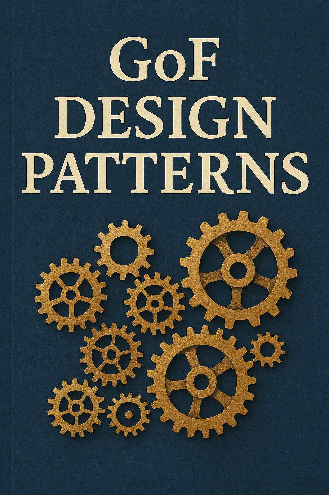

Design Patterns in Java: A Comprehensive Guide
____ _ ____ _ _
| _ \ ___ ___(_) __ _ _ __ | _ \ __ _| |_| |_ ___ _ __ _ __ ___
| | | |/ _ \/ __| |/ _` | '_ \ | |_) / _` | __| __/ _ \ '__| '_ \/ __|
| |_| | __/\__ \ | (_| | | | | | __/ (_| | |_| || __/ | | | | \__ \
|____/ \___||___/_|\__, |_| |_| |_| \__,_|\__|\__\___|_| |_| |_|___/
|___/ Author
I. Artyomov (aka merdoc)
Introduction
Welcome to "Design Patterns in Java: A Comprehensive Guide." This book is designed to provide a thorough understanding of the Gang of Four (GoF) design patterns, implemented in Java. Design patterns are proven solutions to common problems that arise during software design and development. They represent best practices evolved over time by experienced software developers. Code for this book on github https://github.com/Merdoc97/gofPatterns
Who This Book Is For
This book is intended for:
Software Developers and Engineers:
- Those looking to improve their understanding of design patterns and how to implement them in Java
- Developers who want to apply these patterns in their own projects
- Engineers seeking reference implementations to solve specific design problems
Students and Educators:
- Computer Science and Software Engineering students learning about design patterns
- Instructors teaching software design principles and looking for practical examples
- Self-learners following a structured approach to master design patterns
Technical Interviewees and Interviewers:
- Job candidates preparing for technical interviews that may include design pattern questions
- Interviewers looking for standard implementations to compare with candidates' solutions
Software Architects:
- Professionals responsible for designing software systems
- Architects looking to evaluate different design patterns for specific scenarios
- Team leads who want to establish common design vocabulary and practices
Code Reviewers:
- Developers responsible for reviewing others' code and suggesting improvements
- Team members looking to establish coding standards based on proven design principles
How to Use This Book
Each pattern in this book is presented with:
- A clear explanation of the pattern's intent and use cases
- UML diagrams illustrating the structure
- Java code examples demonstrating implementation
- Notes on benefits, drawbacks, and related patterns
The patterns are organized into three categories:
- Creational Patterns: Dealing with object creation mechanisms
- Structural Patterns: Concerned with object composition
- Behavioral Patterns: Focused on communication between objects
Table of Contents
1. Introduction to Design Patterns
2. Creational Patterns
3. Structural Patterns
4. Behavioral Patterns
- Chain of Responsibility
- Command
- Interpreter
- Iterator
- Mediator
- Memento
- Observer
- State
- Strategy
- Template Method
- Visitor
5. Conclusion
- Design Pattern Relationships
- Anti-Patterns
- Further Reading and Resources
Introduction to Design Patterns
What are Design Patterns?
Design patterns are typical solutions to common problems in software design. They are like pre-made blueprints that you can customize to solve a recurring design problem in your code.
Design patterns are not specific pieces of code, but rather concepts that can be used to handle recurring themes in software architecture. They represent the best practices used by experienced object-oriented software developers and are solutions to general problems that software developers faced during software development.
The patterns typically show relationships and interactions between classes or objects. The idea is to speed up the development process by providing well-tested, proven development paradigms.
History of GoF Patterns
The term "Gang of Four" (GoF) refers to the four authors of the book, "Design Patterns: Elements of Reusable Object-Oriented Software":
- Erich Gamma
- Richard Helm
- Ralph Johnson
- John Vlissides
Published in 1994, this book was the first to popularize the concept of design patterns in software engineering. It described 23 patterns that are now considered classic in object-oriented design.
The GoF patterns were inspired by the work of architect Christopher Alexander, who wrote about patterns in buildings and towns, and the idea was adapted to software design. The book became immensely influential and has been cited in countless software engineering texts and courses.
Pattern Categories
The GoF design patterns are categorized into three main groups:
1. Creational Patterns
These patterns deal with object creation mechanisms, trying to create objects in a manner suitable to the situation. The basic form of object creation could result in design problems or add complexity to the design. Creational patterns solve this problem by controlling the object creation process.
Examples include:
- Factory Method
- Abstract Factory
- Builder
- Prototype
- Singleton
2. Structural Patterns
These patterns are concerned with how classes and objects are composed to form larger structures. They help ensure that when parts of a system change, the entire structure doesn't need to change.
Examples include:
- Adapter
- Bridge
- Composite
- Decorator
- Facade
- Flyweight
- Proxy
3. Behavioral Patterns
These patterns are concerned with algorithms and the assignment of responsibilities between objects. They describe not just patterns of objects or classes but also the patterns of communication between them.
Examples include:
- Chain of Responsibility
- Command
- Interpreter
- Iterator
- Mediator
- Memento
- Observer
- State
- Strategy
- Template Method
- Visitor
When to Use Design Patterns
Design patterns should be applied judiciously, considering their benefits and trade-offs:
Benefits of Using Design Patterns:
Proven Solutions: Design patterns represent solutions that have been refined over time by many software developers.
Common Vocabulary: They provide a standard terminology and are specific to particular scenarios, making it easier for developers to communicate design ideas.
Reusability: By using design patterns, you can make your code more reusable and adaptable to changing requirements.
Abstraction: Patterns help you think at a higher level of abstraction, focusing on the design rather than implementation details.
Quality: Implementing well-established design patterns can lead to more robust, maintainable, and scalable code.
When Not to Use Design Patterns:
Simple Problems: For simple, straightforward problems, using a design pattern might introduce unnecessary complexity.
Unfamiliarity: If you or your team are not familiar with a pattern, implementing it incorrectly could lead to more problems than it solves.
Performance Concerns: Some patterns introduce additional layers of abstraction, which might impact performance in performance-critical applications.
Overuse: Using patterns for the sake of using patterns can lead to over-engineered solutions. Always consider if a simpler approach would suffice.
Guidelines for Using Design Patterns:
Understand the Problem: Before applying a pattern, make sure you fully understand the problem you're trying to solve.
Know the Patterns: Familiarize yourself with various patterns and their intended uses.
Consider Alternatives: Always consider simpler alternatives before applying a complex pattern.
Adapt as Needed: Patterns are guidelines, not rules. Feel free to adapt them to your specific needs.
Document Your Decisions: When you use a pattern, document why you chose it and how you've implemented it.
In the following chapters, we'll explore each of the GoF design patterns in detail, with Java implementations and practical examples to help you understand when and how to apply them effectively.
Creational Design Patterns
Creational design patterns are concerned with the way objects are created. They reduce complexities and instability by creating objects in a controlled manner.
The main purpose of creational patterns is to create objects in a manner suitable to the situation. The basic approach of object creation could result in design problems or added complexity to the design. Creational design patterns solve this problem by controlling the object creation.
Patterns in This Category
Factory Method
The Factory Method pattern provides an interface for creating objects in a superclass, but allows subclasses to alter the type of objects that will be created.
Key features:
- Defines an interface for creating an object, but lets subclasses decide which class to instantiate
- Refers to the newly created object through a common interface
Abstract Factory
The Abstract Factory pattern provides an interface for creating families of related or dependent objects without specifying their concrete classes.
Key features:
- Creates families of related objects without specifying their concrete classes
- Useful when a system needs to be independent from how its products are created, composed, and represented
Builder
The Builder pattern separates the construction of a complex object from its representation, allowing the same construction process to create different representations.
Key features:
- Separates the construction of a complex object from its representation
- Allows the same construction process to create various representations
- Particularly useful when an object needs to be created with many optional components or configurations
Prototype
The Prototype pattern specifies the kinds of objects to create using a prototypical instance, and creates new objects by copying this prototype.
Key features:
- Creates new objects by copying an existing object, known as the prototype
- Useful when the cost of creating a new object is more expensive than copying an existing one
- Allows adding or removing objects at runtime
Singleton
The Singleton pattern ensures a class has only one instance and provides a global point of access to it.
Key features:
- Ensures a class has only one instance
- Provides a global point of access to that instance
- Useful for coordinating actions across a system
When to Use Creational Patterns
Consider using creational patterns when:
- A system should be independent of how its objects are created, composed, and represented
- A class wants its subclasses to specify the objects it creates
- You want to hide the complexity of creating complex objects
- You need to control the creation process of objects
- You need to optimize resource usage by reusing existing objects instead of creating new ones
Relationships Between Creational Patterns
- Factory Method is often used in frameworks where a class can't anticipate the type of objects it must create
- Abstract Factory is often implemented using Factory Methods, but can also be implemented using Prototype
- Builder focuses on constructing complex objects step by step
- Prototype is useful when you need to avoid subclasses of an object creator in the client application
- Singleton is often used with Abstract Factory, Builder, or Prototype to ensure there's only one factory, builder, or prototype registry
In the following sections, we'll explore each of these patterns in detail, with Java implementations and practical examples.
Factory Method Pattern

Intent
The Factory Method pattern defines an interface for creating an object, but lets subclasses decide which class to instantiate. Factory Method lets a class defer instantiation to subclasses.
Problem
You need to create objects without specifying the exact class of object that will be created. You want to delegate the responsibility of instantiating a class to its subclasses.
Solution
The Factory Method pattern suggests defining an interface for creating an object, but letting subclasses decide which class to instantiate. This allows a class to defer instantiation to subclasses.
Structure
The Factory Method pattern consists of:
- Creator: Declares the factory method, which returns an object of type Product. Creator may also define a default implementation of the factory method that returns a default ConcreteProduct object.
- ConcreteCreator: Overrides the factory method to return an instance of a ConcreteProduct.
- Product: Defines the interface of objects the factory method creates.
- ConcreteProduct: Implements the Product interface.
Implementation in Java
In our implementation:
Creatoris an abstract class that declares the factory method.ConcreteCreatorAandConcreteCreatorBextend theCreatorclass and implement the factory method to return different products.Productis an interface that defines the operations that all products must implement.ConcreteProductAandConcreteProductBimplement theProductinterface.
Product Interface
public interface Product {
void operation();
}Concrete Products
public class ConcreteProductA implements Product {
@Override
public void operation() {
System.out.println("ConcreteProductA: Performing operation");
}
}
public class ConcreteProductB implements Product {
@Override
public void operation() {
System.out.println("ConcreteProductB: Performing operation");
}
}Creator Abstract Class
public abstract class Creator {
// Factory method
public abstract Product createProduct();
// Operation that uses the factory method
public void someOperation() {
Product product = createProduct();
product.operation();
}
}Concrete Creators
public class ConcreteCreatorA extends Creator {
@Override
public Product createProduct() {
return new ConcreteProductA();
}
}
public class ConcreteCreatorB extends Creator {
@Override
public Product createProduct() {
return new ConcreteProductB();
}
}Client
public class FactoryMethodDemo {
public static void main(String[] args) {
// Create creators
Creator creatorA = new ConcreteCreatorA();
Creator creatorB = new ConcreteCreatorB();
// Use creators to create and use products
System.out.println("Using ConcreteCreatorA:");
creatorA.someOperation();
System.out.println("\nUsing ConcreteCreatorB:");
creatorB.someOperation();
}
}When to Use
Use the Factory Method pattern when:
- A class can't anticipate the class of objects it must create.
- A class wants its subclasses to specify the objects it creates.
- Classes delegate responsibility to one of several helper subclasses, and you want to localize the knowledge of which helper subclass is the delegate.
- You want to provide users of your library or framework with a way to extend its internal components.
- You want to save system resources by reusing existing objects instead of rebuilding them each time.
Benefits
- Loose coupling: The pattern separates the implementation of the product from its use.
- Single Responsibility Principle: You can move the product creation code into one place in the program, making the code easier to support.
- Open/Closed Principle: You can introduce new types of products into the program without breaking existing client code.
- Flexibility: The pattern provides hooks for subclasses to extend the factory method to create specialized product objects.
- Consistency: Products created by the same creator are compatible with each other.
Drawbacks
- Complexity: The pattern requires creating many new subclasses, which can increase the complexity of the code.
- Refactoring challenges: Introducing the pattern into an existing hierarchy can be challenging.
- Inheritance limitations: The pattern relies on inheritance, which can limit flexibility in some contexts.
- Increased number of classes: The pattern introduces additional classes, which can make the code more difficult to understand.
Related Patterns
- Abstract Factory: Factory Method is often used in Abstract Factory implementations.
- Template Method: Factory Method is a specialization of Template Method.
- Prototype: Factory Method can use Prototype to create objects by cloning a prototype instead of creating new instances.
- Singleton: Factory Methods can return a Singleton instance.
Example in the Project
You can find the complete implementation of the Factory Method pattern in the project:
-
Abstract Factory Pattern
Intent
The Abstract Factory pattern provides an interface for creating families of related or dependent objects without specifying their concrete classes.
Problem
You need to create families of related objects that are designed to work together, and you want to ensure that a client always uses objects from the same family. Additionally, you want to decouple the client code from the concrete classes of the objects it uses.
Solution
The Abstract Factory pattern suggests defining an interface (Abstract Factory) with methods for creating each type of product, and then implementing this interface for each family of products. The client code works with factories and products through their abstract interfaces, without being coupled to their concrete implementations.
Structure
The Abstract Factory pattern consists of:
- AbstractFactory: Declares an interface for operations that create abstract product objects.
- ConcreteFactory: Implements the operations to create concrete product objects.
- AbstractProduct: Declares an interface for a type of product object.
- ConcreteProduct: Defines a product object to be created by the corresponding concrete factory and implements the AbstractProduct interface.
- Client: Uses only interfaces declared by AbstractFactory and AbstractProduct classes.
Implementation in Java
In our implementation:
AbstractFactoryis an interface that declares methods for creating different types of products.ConcreteFactory1andConcreteFactory2implement theAbstractFactoryinterface to create products of a specific family.ProductAandProductBare interfaces that declare the operations that all concrete products must implement.ConcreteProductA1,ConcreteProductA2,ConcreteProductB1, andConcreteProductB2implement the product interfaces.
Abstract Products
public interface ProductA {
void operationA();
}
public interface ProductB {
void operationB();
void collaborateWith(ProductA productA);
}Concrete Products
public class ConcreteProductA1 implements ProductA {
@Override
public void operationA() {
System.out.println("ConcreteProductA1: Performing operation A");
}
}
public class ConcreteProductA2 implements ProductA {
@Override
public void operationA() {
System.out.println("ConcreteProductA2: Performing operation A");
}
}
public class ConcreteProductB1 implements ProductB {
@Override
public void operationB() {
System.out.println("ConcreteProductB1: Performing operation B");
}
@Override
public void collaborateWith(ProductA productA) {
System.out.println("ConcreteProductB1: Collaborating with " + productA.getClass().getSimpleName());
productA.operationA();
}
}
public class ConcreteProductB2 implements ProductB {
@Override
public void operationB() {
System.out.println("ConcreteProductB2: Performing operation B");
}
@Override
public void collaborateWith(ProductA productA) {
System.out.println("ConcreteProductB2: Collaborating with " + productA.getClass().getSimpleName());
productA.operationA();
}
}Abstract Factory
public interface AbstractFactory {
ProductA createProductA();
ProductB createProductB();
}Concrete Factories
public class ConcreteFactory1 implements AbstractFactory {
@Override
public ProductA createProductA() {
return new ConcreteProductA1();
}
@Override
public ProductB createProductB() {
return new ConcreteProductB1();
}
}
public class ConcreteFactory2 implements AbstractFactory {
@Override
public ProductA createProductA() {
return new ConcreteProductA2();
}
@Override
public ProductB createProductB() {
return new ConcreteProductB2();
}
}Client
public class Client {
private ProductA productA;
private ProductB productB;
public Client(AbstractFactory factory) {
productA = factory.createProductA();
productB = factory.createProductB();
}
public void executeOperations() {
productA.operationA();
productB.operationB();
productB.collaborateWith(productA);
}
}Demo
public class AbstractFactoryDemo {
public static void main(String[] args) {
// Create and use the first family of products
System.out.println("Using ConcreteFactory1 (Family 1):");
AbstractFactory factory1 = new ConcreteFactory1();
Client client1 = new Client(factory1);
client1.executeOperations();
// Create and use the second family of products
System.out.println("\nUsing ConcreteFactory2 (Family 2):");
AbstractFactory factory2 = new ConcreteFactory2();
Client client2 = new Client(factory2);
client2.executeOperations();
}
}When to Use
Use the Abstract Factory pattern when:
- A system should be independent of how its products are created, composed, and represented.
- A system should be configured with one of multiple families of products.
- A family of related product objects is designed to be used together, and you need to enforce this constraint.
- You want to provide a class library of products, and you want to reveal just their interfaces, not their implementations.
- The lifetime of the dependency is conceptually shorter than the lifetime of the consumer.
Benefits
- Isolation of concrete classes: The pattern isolates concrete classes, as the factory encapsulates the responsibility and the process of creating product objects.
- Exchanging product families easily: The concrete factory can be changed at runtime, allowing the application to use different product families.
- Promoting consistency among products: When products in a family are designed to work together, the Abstract Factory makes it easy to ensure that a client always uses objects from the same family.
- Open/Closed Principle: You can introduce new variants of products without breaking existing client code.
- Single Responsibility Principle: You can move the product creation code into one place, making the code easier to support.
Drawbacks
- Complexity: The pattern introduces a lot of new interfaces and classes, which can make the code more difficult to understand.
- Difficulty in adding new products: Supporting new kinds of products requires extending the factory interface, which may involve changing all concrete factories.
- Dependency on concrete factory implementation: The client code might become dependent on the specific factory implementation.
- Increased number of classes: The pattern introduces many new classes, which can increase the complexity of the codebase.
Related Patterns
- Factory Method: Abstract Factory is often implemented using Factory Methods.
- Singleton: Abstract Factories are often implemented as Singletons.
- Prototype: Abstract Factory can use Prototype to create objects by cloning a prototype instead of creating new instances.
- Flyweight: Concrete factories can use Flyweight to reduce the number of created objects.
Example in the Project
You can find the complete implementation of the Abstract Factory pattern in the project:
- AbstractFactory Interface
- ConcreteFactory1
- ConcreteFactory2
- ProductA Interface
- ProductB Interface
- ConcreteProductA1
- ConcreteProductA2
- ConcreteProductB1
- ConcreteProductB2
- Client
- AbstractFactoryDemo
Builder Pattern

Intent
The Builder pattern separates the construction of a complex object from its representation, allowing the same construction process to create different representations.
Problem
You need to create a complex object with many optional components or configurations, but constructors with many parameters become unwieldy and hard to read. Additionally, you want to create different representations of the object using the same construction process.
Solution
The Builder pattern suggests separating the construction of a complex object from its representation. It extracts the object construction code out of its own class and moves it to separate objects called builders. The construction process is directed by a director object, which uses a builder to construct the complex object step by step.
Structure
The Builder pattern consists of:
- Builder: Specifies an abstract interface for creating parts of a Product object.
- ConcreteBuilder: Constructs and assembles parts of the product by implementing the Builder interface, and provides an interface for retrieving the product.
- Director: Constructs an object using the Builder interface.
- Product: Represents the complex object under construction.
Implementation in Java
In our implementation:
Builderis an interface that declares methods for building parts of a product.ConcreteBuilder1andConcreteBuilder2implement theBuilderinterface to construct and assemble parts of the product.Directoruses a builder to construct the product.Productis the complex object being built.
Builder Interface
public interface Builder {
void buildPartA();
void buildPartB();
void buildPartC();
Product getResult();
}Concrete Builders
public class ConcreteBuilder1 implements Builder {
private Product product = new Product();
@Override
public void buildPartA() {
product.addPart("Part A1");
}
@Override
public void buildPartB() {
product.addPart("Part B1");
}
@Override
public void buildPartC() {
product.addPart("Part C1");
}
@Override
public Product getResult() {
return product;
}
}
public class ConcreteBuilder2 implements Builder {
private Product product = new Product();
@Override
public void buildPartA() {
product.addPart("Part A2");
}
@Override
public void buildPartB() {
product.addPart("Part B2");
}
@Override
public void buildPartC() {
product.addPart("Part C2");
}
@Override
public Product getResult() {
return product;
}
}Director
public class Director {
private Builder builder;
public Director(Builder builder) {
this.builder = builder;
}
public void changeBuilder(Builder builder) {
this.builder = builder;
}
public void constructMinimalViableProduct() {
builder.buildPartA();
}
public void constructFullFeaturedProduct() {
builder.buildPartA();
builder.buildPartB();
builder.buildPartC();
}
}Product
public class Product {
private List<String> parts = new ArrayList<>();
public void addPart(String part) {
parts.add(part);
}
public void showParts() {
System.out.println("Product Parts:");
for (String part : parts) {
System.out.println("- " + part);
}
}
}Client
public class Client {
public static void main(String[] args) {
// Create builders
Builder builder1 = new ConcreteBuilder1();
Builder builder2 = new ConcreteBuilder2();
// Create director with builder1
Director director = new Director(builder1);
// Construct a minimal viable product using builder1
System.out.println("Minimal viable product built by ConcreteBuilder1:");
director.constructMinimalViableProduct();
Product product1 = builder1.getResult();
product1.showParts();
// Construct a full featured product using builder1
System.out.println("\nFull featured product built by ConcreteBuilder1:");
director.constructFullFeaturedProduct();
Product product2 = builder1.getResult();
product2.showParts();
// Change to builder2 and construct a full featured product
director.changeBuilder(builder2);
System.out.println("\nFull featured product built by ConcreteBuilder2:");
director.constructFullFeaturedProduct();
Product product3 = builder2.getResult();
product3.showParts();
}
}When to Use
Use the Builder pattern when:
- The algorithm for creating a complex object should be independent of the parts that make up the object and how they're assembled.
- The construction process must allow different representations for the object that's constructed.
- You need to construct complex objects step by step.
- You want to hide the internal structure of a product from the client.
- You want to avoid telescoping constructors (constructors with many parameters).
Benefits
- Separation of concerns: The pattern separates the construction of a complex object from its representation.
- Step-by-step construction: You can construct objects step by step, defer construction steps, or run steps recursively.
- Reuse of construction code: You can reuse the same construction code when building various representations of products.
- Single Responsibility Principle: You isolate complex construction code from the business logic of the product.
- Immutability: Since the builder returns the final object, it can ensure the object is in a consistent state.
Drawbacks
- Complexity: The pattern requires creating multiple new classes, which can increase the complexity of the code.
- Overhead: For simple objects, using a builder might be overkill.
- Mutable builders: If the builder is mutable, it might not be thread-safe.
- Dependency on concrete builders: The client code might become dependent on specific builder implementations.
Related Patterns
- Abstract Factory: Builder focuses on constructing complex objects step by step, while Abstract Factory emphasizes creating families of related objects.
- Composite: Builders can use Composite to build complex objects with a tree structure.
- Factory Method: Builder can use Factory Method to create the parts of the product.
- Prototype: Builder can use Prototype to create parts of the product by cloning existing parts.
Example in the Project
You can find the complete implementation of the Builder pattern in the project:
Prototype-Pattern

Intent
The Prototype pattern specifies the kinds of objects to create using a prototypical instance, and creates new objects by copying this prototype.
Problem
You need to create objects based on existing objects, but creating them from scratch is expensive or complex. Additionally, you want to hide the complexity of creating new instances from the client.
Solution
The Prototype pattern suggests creating new objects by copying existing objects, called prototypes, instead of creating new instances from scratch. The pattern declares a common interface for all objects that support cloning, which lets you clone an object without coupling your code to the class of that object.
Structure
The Prototype pattern consists of:
- Prototype: Declares an interface for cloning itself.
- ConcretePrototype: Implements the operation for cloning itself.
- Client: Creates a new object by asking a prototype to clone itself.
- PrototypeRegistry (optional): Provides a way to access frequently used prototypes by storing a set of pre-built objects that are ready to be copied.
Implementation in Java
In our implementation:
Prototypeis an interface that declares theclonemethod.ConcretePrototype1andConcretePrototype2implement thePrototypeinterface and provide their own implementation of theclonemethod.PrototypeRegistrystores a catalog of frequently used prototypes.Clientuses the prototype to create new objects.
Prototype Interface
public interface Prototype extends Cloneable {
Prototype clone();
}Concrete Prototypes
public class ConcretePrototype1 implements Prototype {
private String field1;
private int field2;
public ConcretePrototype1() {
this.field1 = "Default";
this.field2 = 0;
}
public ConcretePrototype1(String field1, int field2) {
this.field1 = field1;
this.field2 = field2;
}
@Override
public Prototype clone() {
return new ConcretePrototype1(this.field1, this.field2);
}
public void setField1(String field1) {
this.field1 = field1;
}
public void setField2(int field2) {
this.field2 = field2;
}
@Override
public String toString() {
return "ConcretePrototype1 [field1=" + field1 + ", field2=" + field2 + "]";
}
}
public class ConcretePrototype2 implements Prototype {
private String field1;
private boolean field2;
public ConcretePrototype2() {
this.field1 = "Default";
this.field2 = false;
}
public ConcretePrototype2(String field1, boolean field2) {
this.field1 = field1;
this.field2 = field2;
}
@Override
public Prototype clone() {
return new ConcretePrototype2(this.field1, this.field2);
}
public void setField1(String field1) {
this.field1 = field1;
}
public void setField2(boolean field2) {
this.field2 = field2;
}
@Override
public String toString() {
return "ConcretePrototype2 [field1=" + field1 + ", field2=" + field2 + "]";
}
}Prototype Registry
public class PrototypeRegistry {
private Map<String, Prototype> prototypes = new HashMap<>();
public void addPrototype(String key, Prototype prototype) {
prototypes.put(key, prototype);
}
public Prototype getPrototype(String key) {
return prototypes.get(key).clone();
}
public void removePrototype(String key) {
prototypes.remove(key);
}
}Client
public class Client {
public static void main(String[] args) {
// Create prototype instances
ConcretePrototype1 prototype1 = new ConcretePrototype1("Original1", 10);
ConcretePrototype2 prototype2 = new ConcretePrototype2("Original2", true);
// Create a prototype registry
PrototypeRegistry registry = new PrototypeRegistry();
registry.addPrototype("prototype1", prototype1);
registry.addPrototype("prototype2", prototype2);
// Clone prototypes from the registry
ConcretePrototype1 clone1 = (ConcretePrototype1) registry.getPrototype("prototype1");
ConcretePrototype2 clone2 = (ConcretePrototype2) registry.getPrototype("prototype2");
// Verify the clones
System.out.println("Original prototype1: " + prototype1);
System.out.println("Cloned prototype1: " + clone1);
System.out.println("Original prototype2: " + prototype2);
System.out.println("Cloned prototype2: " + clone2);
// Modify the clones
clone1.setField1("Modified1");
clone1.setField2(20);
clone2.setField1("Modified2");
clone2.setField2(false);
// Verify that the originals are unchanged
System.out.println("\nAfter modification:");
System.out.println("Original prototype1: " + prototype1);
System.out.println("Modified clone1: " + clone1);
System.out.println("Original prototype2: " + prototype2);
System.out.println("Modified clone2: " + clone2);
}
}When to Use
Use the Prototype pattern when:
- The classes to instantiate are specified at run-time, for example, by dynamic loading.
- You need to avoid building a class hierarchy of factories that parallels the class hierarchy of products.
- Instances of a class can have one of only a few different combinations of state.
- Creating an object is an expensive operation, and it would be more efficient to copy an existing object.
- Objects must be created with values that can't be determined at initialization time.
Benefits
- Reduced subclassing: The pattern lets you clone objects without depending on their concrete classes.
- Reduced initialization cost: Creating new objects by cloning existing ones can be more efficient than creating them from scratch.
- Dynamic configuration: You can add and remove objects at runtime.
- Reduced complexity: You can create complex objects more conveniently.
- Alternative to inheritance: Cloning is an alternative to subclassing when you need to create variations of an object.
Drawbacks
- Complexity of clone operation: Implementing the clone operation can be complex, especially for objects with circular references.
- Deep vs. shallow copy: You need to decide whether to implement deep or shallow copying, which can be tricky.
- Initialization issues: The pattern doesn't address the issue of initializing the internal state of clones, especially for complex objects.
- Cloning might not be supported: Some classes might not support cloning due to their internal structure or dependencies.
Related Patterns
- Abstract Factory: Prototype can be used with Abstract Factory to create objects by cloning a prototype instead of creating new instances.
- Composite: Prototypes can be used with Composite to create copies of complex structures.
- Decorator: Prototypes can be used with Decorator to create copies of decorated objects.
- Command: Prototypes can be used with Command to create copies of commands for undo/redo operations.
Example in the Project
You can find the complete implementation of the Prototype pattern in the project:
Singleton Pattern

Intent
The Singleton pattern ensures a class has only one instance and provides a global point of access to it.
Problem
Sometimes it's important to have exactly one instance of a class. For example, you might need a single object that coordinates actions across your system, like a database connection manager, a file manager, or a logger. Having multiple instances of such classes could lead to inconsistent states or resource conflicts.
Solution
The Singleton pattern suggests defining a method that lets clients access the unique instance of a class. This method returns the same instance every time it's called, ensuring that there's only one instance of the class throughout the application.
Structure
The Singleton pattern consists of:
- Singleton: A class that has a private constructor and a static method that returns the single instance of the class.
Implementation in Java
There are several ways to implement the Singleton pattern in Java:
Eager Initialization
public class EagerSingleton {
// The instance is created when the class is loaded
private static final EagerSingleton INSTANCE = new EagerSingleton();
// Private constructor to prevent instantiation from outside
private EagerSingleton() {
// Initialization code
}
// Public method to provide access to the instance
public static EagerSingleton getInstance() {
return INSTANCE;
}
// Business methods
public void doSomething() {
System.out.println("EagerSingleton is doing something");
}
}Lazy Initialization
public class LazySingleton {
// The instance is not created until getInstance() is called
private static LazySingleton instance;
// Private constructor to prevent instantiation from outside
private LazySingleton() {
// Initialization code
}
// Public method to provide access to the instance
public static LazySingleton getInstance() {
if (instance == null) {
instance = new LazySingleton();
}
return instance;
}
// Business methods
public void doSomething() {
System.out.println("LazySingleton is doing something");
}
}Thread-Safe Singleton
public class ThreadSafeSingleton {
// The instance is not created until getInstance() is called
private static volatile ThreadSafeSingleton instance;
// Private constructor to prevent instantiation from outside
private ThreadSafeSingleton() {
// Initialization code
}
// Public method to provide access to the instance
public static ThreadSafeSingleton getInstance() {
// Double-checked locking
if (instance == null) {
synchronized (ThreadSafeSingleton.class) {
if (instance == null) {
instance = new ThreadSafeSingleton();
}
}
}
return instance;
}
// Business methods
public void doSomething() {
System.out.println("ThreadSafeSingleton is doing something");
}
}Enum Singleton
public enum EnumSingleton {
INSTANCE;
// Business methods
public void doSomething() {
System.out.println("EnumSingleton is doing something");
}
}Client
public class SingletonDemo {
public static void main(String[] args) {
// Demonstrate Eager Singleton
EagerSingleton eagerSingleton1 = EagerSingleton.getInstance();
EagerSingleton eagerSingleton2 = EagerSingleton.getInstance();
System.out.println("Eager Singleton instances are the same: " + (eagerSingleton1 == eagerSingleton2));
eagerSingleton1.doSomething();
// Demonstrate Lazy Singleton
LazySingleton lazySingleton1 = LazySingleton.getInstance();
LazySingleton lazySingleton2 = LazySingleton.getInstance();
System.out.println("Lazy Singleton instances are the same: " + (lazySingleton1 == lazySingleton2));
lazySingleton1.doSomething();
// Demonstrate Thread-Safe Singleton
ThreadSafeSingleton threadSafeSingleton1 = ThreadSafeSingleton.getInstance();
ThreadSafeSingleton threadSafeSingleton2 = ThreadSafeSingleton.getInstance();
System.out.println("Thread-Safe Singleton instances are the same: " + (threadSafeSingleton1 == threadSafeSingleton2));
threadSafeSingleton1.doSomething();
// Demonstrate Enum Singleton
EnumSingleton enumSingleton1 = EnumSingleton.INSTANCE;
EnumSingleton enumSingleton2 = EnumSingleton.INSTANCE;
System.out.println("Enum Singleton instances are the same: " + (enumSingleton1 == enumSingleton2));
enumSingleton1.doSomething();
}
}When to Use
Use the Singleton pattern when:
- There must be exactly one instance of a class, and it must be accessible to clients from a well-known access point.
- The sole instance should be extensible by subclassing, and clients should be able to use an extended instance without modifying their code.
- You need to control concurrent access to a shared resource.
- You need to maintain a global state or configuration.
- You need to coordinate actions across the system.
Benefits
- Controlled access: You can have strict control over how and when clients access the sole instance.
- Reduced namespace pollution: The Singleton pattern is an improvement over global variables because it avoids polluting the global namespace.
- Permits refinement: The Singleton class can be subclassed, and you can configure an application with an instance of this extended class.
- Flexibility: You can change your mind and allow more than one instance later without changing client code.
- Lazy initialization: With lazy initialization, the Singleton instance is created only when it's first needed.
Drawbacks
- Global state: The Singleton pattern introduces a global state into your application, which can make testing and debugging more difficult.
- Thread safety concerns: Implementing a thread-safe Singleton can be tricky.
- Difficult to subclass: If the constructor is private, it's not possible to subclass the Singleton class.
- Lifetime issues: The Singleton instance typically lives for the duration of the application, which can be problematic for memory-intensive objects.
- Violation of Single Responsibility Principle: The Singleton class is responsible for both creating the instance and its business logic.
Related Patterns
- Abstract Factory, Builder, and Prototype can use Singleton in their implementation.
- Facade objects are often Singletons because only one Facade object is required.
- State objects are often Singletons.
- Flyweight shows how to create many small objects efficiently, while Singleton shows how to create just one object.
Example in the Project
You can find the complete implementation of the Singleton pattern in the project:
Structural Design Patterns
Structural design patterns are concerned with how classes and objects are composed to form larger structures. They help ensure that if one part of a system changes, the entire system doesn't need to change along with it.
These patterns focus on simplifying the structure by identifying the relationships between entities. They help in ensuring that when one part of a system changes, the entire structure doesn't need to do the same.
Patterns in This Category
Adapter
The Adapter pattern allows objects with incompatible interfaces to collaborate.
Key features:
- Converts the interface of a class into another interface clients expect
- Allows classes to work together that couldn't otherwise because of incompatible interfaces
- Can involve a separate adapter class or can be implemented directly in the adapted class
Bridge
The Bridge pattern separates an abstraction from its implementation so that the two can vary independently.
Key features:
- Decouples an abstraction from its implementation so that the two can vary independently
- Involves an interface acting as a bridge between the abstract class and implementor classes
- Useful when both the class and what it does vary often
Composite
The Composite pattern lets you compose objects into tree structures to represent part-whole hierarchies.
Key features:
- Composes objects into tree structures to represent part-whole hierarchies
- Lets clients treat individual objects and compositions of objects uniformly
- Defines class hierarchies consisting of primitive objects and composite objects
Decorator
The Decorator pattern lets you attach new behaviors to objects by placing these objects inside special wrapper objects that contain the behaviors.
Key features:
- Attaches additional responsibilities to an object dynamically
- Provides a flexible alternative to subclassing for extending functionality
- Follows the Open/Closed Principle by allowing behavior to be extended without modifying existing code
Facade
The Facade pattern provides a simplified interface to a complex subsystem.
Key features:
- Provides a unified interface to a set of interfaces in a subsystem
- Defines a higher-level interface that makes the subsystem easier to use
- Doesn't prevent applications from using subsystem classes if needed
Flyweight
The Flyweight pattern lets you fit more objects into the available amount of RAM by sharing common parts of state between multiple objects instead of keeping all of the data in each object.
Key features:
- Minimizes memory usage by sharing as much data as possible with similar objects
- Divides an object's state into intrinsic (shared) and extrinsic (unique) state
- Particularly useful when you need a large number of similar objects
Proxy
The Proxy pattern provides a substitute or placeholder for another object to control access to it.
Key features:
- Provides a surrogate or placeholder for another object to control access to it
- Can be used to add a layer of control over the actual object's operations
- Common types include: Remote Proxy, Virtual Proxy, Protection Proxy, and Smart Reference
When to Use Structural Patterns
Consider using structural patterns when:
- You need to ensure that changes to one part of a system don't affect other parts
- You want to use existing classes but their interfaces aren't compatible
- You need to organize a complex system into layers
- You want to add responsibilities to objects dynamically
- You need to optimize resource usage with many fine-grained objects
- You want to simplify the interface of a complex subsystem
Relationships Between Structural Patterns
- Adapter provides a different interface to its subject, while Proxy provides the same interface and Decorator provides an enhanced interface
- Composite and Decorator have similar structure diagrams, reflecting the fact that both rely on recursive composition
- Decorator can be viewed as a degenerate Composite with only one component
- Decorator adds additional responsibilities, while Adapter makes unrelated classes work together
- Facade defines a new interface, while Adapter reuses an old interface
- Flyweight is often combined with Composite to implement shared leaf nodes
In the following sections, we'll explore each of these patterns in detail, with Java implementations and practical examples.
Adapter Pattern

Intent
The Adapter pattern allows objects with incompatible interfaces to collaborate. It acts as a bridge between two incompatible interfaces by wrapping an instance of one class into an adapter class that presents the interface expected by clients.
Problem
You have an existing class with a useful functionality, but its interface is incompatible with the rest of your code. You want to use this class, but you can't modify its source code.
Solution
The Adapter pattern suggests creating a special object (an adapter) that converts the interface of one object so that another object can understand it. An adapter wraps one of the objects to hide the complexity of conversion happening behind the scenes.
Structure
The Adapter pattern consists of:
- Target: Defines the domain-specific interface that Client uses.
- Client: Collaborates with objects conforming to the Target interface.
- Adaptee: Defines an existing interface that needs adapting.
- Adapter: Adapts the interface of Adaptee to the Target interface.
Implementation in Java
In our implementation:
Targetis an interface that defines the expected interface.Adapteeis a class with useful functionality but incompatible interface.Adapteris a class that implements theTargetinterface and wraps anAdapteeobject.ClassAdapteris an alternative implementation that uses multiple inheritance (extendsAdapteeand implementsTarget).
Target Interface
public interface Target {
void request();
}Adaptee
public class Adaptee {
public void specificRequest() {
System.out.println("Adaptee: specificRequest() called");
}
}Object Adapter
public class Adapter implements Target {
private Adaptee adaptee;
public Adapter(Adaptee adaptee) {
this.adaptee = adaptee;
}
@Override
public void request() {
System.out.println("Adapter: Converting request to specificRequest");
adaptee.specificRequest();
}
}Class Adapter
public class ClassAdapter extends Adaptee implements Target {
@Override
public void request() {
System.out.println("ClassAdapter: Converting request to specificRequest");
specificRequest();
}
}Client
public class Client {
private Target target;
public Client(Target target) {
this.target = target;
}
public void executeRequest() {
target.request();
}
}Demo
public class AdapterPatternDemo {
public static void main(String[] args) {
// Using Object Adapter
System.out.println("Using Object Adapter:");
Adaptee adaptee = new Adaptee();
Target objectAdapter = new Adapter(adaptee);
Client client1 = new Client(objectAdapter);
client1.executeRequest();
// Using Class Adapter
System.out.println("\nUsing Class Adapter:");
Target classAdapter = new ClassAdapter();
Client client2 = new Client(classAdapter);
client2.executeRequest();
}
}When to Use
Use the Adapter pattern when:
- You want to use an existing class, but its interface isn't compatible with the rest of your code.
- You want to reuse several existing subclasses that lack certain common functionality that can't be added to the superclass.
- You need to work with several existing classes, but it's impractical to adapt their interface by subclassing every one.
- You want to use a class in your application, but the interface of this class doesn't match the interface you need.
Benefits
- Single Responsibility Principle: You can separate the interface or data conversion code from the primary business logic of the program.
- Open/Closed Principle: You can introduce new types of adapters into the program without breaking the existing client code.
- Reusability: You can reuse existing classes that lack some functionality required by your application.
- Flexibility: Adapters allow classes with incompatible interfaces to work together.
- Integration: Adapters make it easier to integrate third-party libraries or legacy code.
Drawbacks
- Complexity: The overall complexity of the code increases because you need to introduce a set of new interfaces and classes.
- Performance overhead: There might be a slight performance overhead due to the additional indirection.
- Multiple adapters: Sometimes you might need to create multiple adapters for each class you want to adapt.
- Adaptee limitations: The pattern can't be used if the Adaptee has a final class or final methods that need to be overridden.
Related Patterns
- Bridge: Adapter is commonly used when an existing component needs to be adapted to work with others. Bridge is designed up-front to let abstractions and implementations vary independently.
- Decorator: Decorator enhances an object without changing its interface. Adapter changes an object's interface.
- Proxy: Proxy provides the same interface as its service object, while Adapter provides a different interface.
- Facade: Adapter adapts an existing interface, while Facade defines a new interface.
Example in the Project
You can find the complete implementation of the Adapter pattern in the project:
Bridge Pattern

Intent
The Bridge pattern separates an abstraction from its implementation so that the two can vary independently. It decouples an abstraction from its implementation so that the two can vary independently.
Problem
When you have a class hierarchy that grows in two different dimensions, using inheritance alone leads to an explosion of subclasses. For example, if you have different types of shapes (circles, squares) and different rendering methods (vector, raster), using inheritance would require creating classes like VectorCircle, RasterCircle, VectorSquare, RasterSquare, and so on.
Solution
The Bridge pattern suggests splitting the monolithic class into two separate hierarchies:
- Abstraction: The interface that defines the high-level operations
- Implementation: The interface that defines the low-level operations
The abstraction contains a reference to the implementation, allowing the two to vary independently.
Structure
The Bridge pattern consists of:
- Abstraction: Defines the abstraction's interface and maintains a reference to an object of type Implementor.
- RefinedAbstraction: Extends the interface defined by Abstraction.
- Implementor: Defines the interface for implementation classes.
- ConcreteImplementor: Implements the Implementor interface and defines its concrete implementation.
Implementation in Java
In our implementation:
Implementoris an interface that defines the operations that concrete implementors must implement.ConcreteImplementorAandConcreteImplementorBimplement theImplementorinterface.Abstractionis an abstract class that maintains a reference to anImplementorobject.RefinedAbstractionextendsAbstractionand provides additional functionality.
Implementor Interface
public interface Implementor {
void operationImpl();
}Concrete Implementors
public class ConcreteImplementorA implements Implementor {
@Override
public void operationImpl() {
System.out.println("ConcreteImplementorA: Performing implementation operation");
}
}
public class ConcreteImplementorB implements Implementor {
@Override
public void operationImpl() {
System.out.println("ConcreteImplementorB: Performing implementation operation");
}
}Abstraction
public abstract class Abstraction {
protected Implementor implementor;
public Abstraction(Implementor implementor) {
this.implementor = implementor;
}
public void operation() {
System.out.println("Abstraction: Delegating operation to implementor");
implementor.operationImpl();
}
}Refined Abstraction
public class RefinedAbstraction extends Abstraction {
public RefinedAbstraction(Implementor implementor) {
super(implementor);
}
@Override
public void operation() {
System.out.println("RefinedAbstraction: Extending the abstraction");
super.operation();
}
public void additionalOperation() {
System.out.println("RefinedAbstraction: Performing additional operation");
implementor.operationImpl();
}
}Client
public class BridgePatternDemo {
public static void main(String[] args) {
// Create implementors
Implementor implementorA = new ConcreteImplementorA();
Implementor implementorB = new ConcreteImplementorB();
// Create abstractions with different implementors
Abstraction abstractionA = new RefinedAbstraction(implementorA);
Abstraction abstractionB = new RefinedAbstraction(implementorB);
// Use the abstractions
System.out.println("Using abstraction with implementor A:");
abstractionA.operation();
System.out.println("\nUsing abstraction with implementor B:");
abstractionB.operation();
// Use refined abstraction's additional functionality
System.out.println("\nUsing refined abstraction's additional functionality:");
RefinedAbstraction refinedAbstraction = new RefinedAbstraction(implementorA);
refinedAbstraction.additionalOperation();
}
}When to Use
Use the Bridge pattern when:
- You want to avoid a permanent binding between an abstraction and its implementation.
- Both the abstractions and their implementations should be extensible by subclassing.
- Changes in the implementation should not impact the client code.
- You want to hide implementation details completely from clients.
- You have a proliferation of classes resulting from a coupled interface and numerous implementations.
- You want to share an implementation among multiple objects.
Benefits
- Decoupling interface and implementation: The pattern decouples the interface from the implementation, allowing them to vary independently.
- Improved extensibility: You can extend the abstraction and implementation hierarchies independently.
- Hiding implementation details: Clients only interact with the abstraction, hiding implementation details.
- Reduced subclass explosion: Avoids the exponential growth of subclasses when a class varies in multiple dimensions.
- Runtime flexibility: You can switch implementations at runtime.
Drawbacks
- Increased complexity: The pattern introduces additional interfaces and classes, which can make the code more complex.
- Slight performance overhead: Due to the additional indirection, there might be a slight performance overhead.
- Design challenges: Identifying the correct abstractions and implementations can be challenging.
- Increased code size: The pattern requires more code than a simple inheritance-based solution.
Related Patterns
- Abstract Factory: Can create and configure a specific Bridge.
- Adapter: Adapter is used when an existing component needs to be adapted to work with others. Bridge is designed up-front to let abstractions and implementations vary independently.
- Strategy: Bridge has a structure similar to Strategy, but Bridge is used to separate an abstraction from its implementation, while Strategy is used to change an algorithm's implementation.
- State: Like Bridge, State pattern can be implemented using the object composition principle.
Example in the Project
You can find the complete implementation of the Bridge pattern in the project:
- Implementor Interface
- ConcreteImplementorA
- ConcreteImplementorB
- Abstraction
- RefinedAbstraction
- BridgePatternDemo
Composite Pattern

Intent
The Composite pattern lets you compose objects into tree structures to represent part-whole hierarchies. It lets clients treat individual objects and compositions of objects uniformly.
Problem
When you're working with tree-structured data, you often need to distinguish between a leaf node and a branch. But using separate objects with different interfaces for these nodes makes the code more complex. Clients need to know whether they're dealing with a leaf or a branch to call the appropriate methods.
Solution
The Composite pattern suggests that you work with both simple and complex elements through a common interface that declares operations applicable to both types of elements. This way, clients don't need to know whether they're working with a leaf or a composite element.
Structure
The Composite pattern consists of:
- Component: Declares the interface for objects in the composition and implements default behavior for the interface common to all classes.
- Leaf: Represents leaf objects in the composition. A leaf has no children.
- Composite: Defines behavior for components having children and stores child components.
- Client: Manipulates objects in the composition through the Component interface.
Implementation in Java
In our implementation:
Componentis an abstract class that defines the common interface for all concrete components.Leafis a class that implements theComponentinterface and represents leaf nodes.Compositeis a class that implements theComponentinterface and represents composite nodes.
Component
public abstract class Component {
protected String name;
public Component(String name) {
this.name = name;
}
public abstract void operation();
public abstract void add(Component component);
public abstract void remove(Component component);
public abstract Component getChild(int index);
public abstract void display(int depth);
public String getName() {
return name;
}
}Leaf
public class Leaf extends Component {
public Leaf(String name) {
super(name);
}
@Override
public void operation() {
System.out.println("Leaf " + name + ": Performing operation");
}
@Override
public void add(Component component) {
System.out.println("Cannot add to a leaf");
}
@Override
public void remove(Component component) {
System.out.println("Cannot remove from a leaf");
}
@Override
public Component getChild(int index) {
System.out.println("Cannot get child from a leaf");
return null;
}
@Override
public void display(int depth) {
StringBuilder indent = new StringBuilder();
for (int i = 0; i < depth; i++) {
indent.append("--");
}
System.out.println(indent + "Leaf: " + name);
}
}Composite
public class Composite extends Component {
private List<Component> children = new ArrayList<>();
public Composite(String name) {
super(name);
}
@Override
public void operation() {
System.out.println("Composite " + name + ": Performing operation");
for (Component component : children) {
component.operation();
}
}
@Override
public void add(Component component) {
children.add(component);
}
@Override
public void remove(Component component) {
children.remove(component);
}
@Override
public Component getChild(int index) {
if (index >= 0 && index < children.size()) {
return children.get(index);
}
return null;
}
@Override
public void display(int depth) {
StringBuilder indent = new StringBuilder();
for (int i = 0; i < depth; i++) {
indent.append("--");
}
System.out.println(indent + "Composite: " + name);
for (Component component : children) {
component.display(depth + 1);
}
}
}Client
public class CompositePatternDemo {
public static void main(String[] args) {
// Create a tree structure
Component root = new Composite("Root");
Component branch1 = new Composite("Branch 1");
Component branch2 = new Composite("Branch 2");
Component leaf1 = new Leaf("Leaf 1");
Component leaf2 = new Leaf("Leaf 2");
Component leaf3 = new Leaf("Leaf 3");
Component leaf4 = new Leaf("Leaf 4");
// Build the tree
root.add(branch1);
root.add(branch2);
branch1.add(leaf1);
branch1.add(leaf2);
branch2.add(leaf3);
branch2.add(leaf4);
// Display the tree structure
System.out.println("Tree structure:");
root.display(0);
// Perform operations on the tree
System.out.println("\nPerforming operations on the tree:");
root.operation();
// Perform operations on a branch
System.out.println("\nPerforming operations on Branch 1:");
branch1.operation();
// Perform operations on a leaf
System.out.println("\nPerforming operations on Leaf 3:");
leaf3.operation();
}
}When to Use
Use the Composite pattern when:
- You want to represent part-whole hierarchies of objects.
- You want clients to be able to ignore the difference between compositions of objects and individual objects.
- The structure can have any level of complexity, and is dynamic.
- You want the client code to work with all objects in the hierarchy uniformly.
Benefits
- Simplified client code: Clients can treat composite structures and individual objects uniformly.
- Easier to add new component types: You can define new leaf or composite components without changing existing code.
- More flexibility in structuring data: You can build complex tree structures using simple components.
- Open/Closed Principle: You can introduce new element types without breaking the existing code.
- Recursive composition: Components can be nested to any level, creating complex structures.
Drawbacks
- Difficult to restrict components: It can be difficult to restrict what components can be added to a composite.
- Overhead for leaf nodes: Leaf nodes must implement methods that don't make sense for them (like add, remove).
- Design complexity: The pattern can make the design overly general, which might be unnecessary for simple cases.
- Performance considerations: Operations that visit every node in a large structure can be expensive.
Related Patterns
- Decorator: Decorator is often used with Composite. When decorators and composites are used together, they usually have a common parent class.
- Iterator: Iterator can be used to traverse composite structures.
- Visitor: Visitor can be used to perform operations over a Composite structure.
- Flyweight: Flyweight can be used to share leaf nodes in a Composite structure to save memory.
- Chain of Responsibility: Often the component-parent link in a composite structure is used to implement the Chain of Responsibility pattern.
Example in the Project
You can find the complete implementation of the Composite pattern in the project:
Decorator Pattern

Intent
The Decorator pattern lets you attach new behaviors to objects by placing these objects inside special wrapper objects that contain the behaviors. It allows you to add responsibilities to objects dynamically without modifying their structure.
Problem
You want to add functionality to an object, but subclassing would lead to an explosion of subclasses to support every combination of functionality. Additionally, you want to be able to add and remove responsibilities dynamically at runtime.
Solution
The Decorator pattern suggests creating a wrapper (decorator) that has the same interface as the original object. This decorator forwards requests to the wrapped object but may perform additional actions before or after forwarding. Multiple decorators can be stacked to add multiple behaviors.
Structure
The Decorator pattern consists of:
- Component: Defines the interface for objects that can have responsibilities added to them dynamically.
- ConcreteComponent: Defines an object to which additional responsibilities can be attached.
- Decorator: Maintains a reference to a Component object and defines an interface that conforms to Component's interface.
- ConcreteDecorator: Adds responsibilities to the component.
Implementation in Java
In our implementation:
Componentis an interface that defines the operations that can be altered by decorators.ConcreteComponentimplements theComponentinterface.Decoratoris an abstract class that implements theComponentinterface and has a reference to aComponentobject.ConcreteDecoratorA,ConcreteDecoratorB, andConcreteDecoratorCextend theDecoratorclass and add specific behaviors.
Component Interface
public interface Component {
void operation();
}Concrete Component
public class ConcreteComponent implements Component {
@Override
public void operation() {
System.out.println("ConcreteComponent: Performing basic operation");
}
}Decorator
public abstract class Decorator implements Component {
protected Component component;
public Decorator(Component component) {
this.component = component;
}
@Override
public void operation() {
component.operation();
}
}Concrete Decorators
public class ConcreteDecoratorA extends Decorator {
public ConcreteDecoratorA(Component component) {
super(component);
}
@Override
public void operation() {
super.operation();
addedBehavior();
}
private void addedBehavior() {
System.out.println("ConcreteDecoratorA: Adding behavior before basic operation");
}
}
public class ConcreteDecoratorB extends Decorator {
public ConcreteDecoratorB(Component component) {
super(component);
}
@Override
public void operation() {
System.out.println("ConcreteDecoratorB: Adding behavior before basic operation");
super.operation();
}
}
public class ConcreteDecoratorC extends Decorator {
public ConcreteDecoratorC(Component component) {
super(component);
}
@Override
public void operation() {
super.operation();
System.out.println("ConcreteDecoratorC: Adding behavior after basic operation");
}
}Client
public class DecoratorPatternDemo {
public static void main(String[] args) {
// Create a basic component
Component component = new ConcreteComponent();
// Decorate it with ConcreteDecoratorA
Component decoratedA = new ConcreteDecoratorA(component);
// Decorate it with ConcreteDecoratorB
Component decoratedB = new ConcreteDecoratorB(component);
// Decorate it with ConcreteDecoratorC
Component decoratedC = new ConcreteDecoratorC(component);
// Decorate it with multiple decorators
Component decoratedABC = new ConcreteDecoratorA(
new ConcreteDecoratorB(
new ConcreteDecoratorC(component)));
// Execute operations
System.out.println("Basic component:");
component.operation();
System.out.println("\nComponent decorated with ConcreteDecoratorA:");
decoratedA.operation();
System.out.println("\nComponent decorated with ConcreteDecoratorB:");
decoratedB.operation();
System.out.println("\nComponent decorated with ConcreteDecoratorC:");
decoratedC.operation();
System.out.println("\nComponent decorated with ConcreteDecoratorA, ConcreteDecoratorB, and ConcreteDecoratorC:");
decoratedABC.operation();
}
}When to Use
Use the Decorator pattern when:
- You need to add responsibilities to objects dynamically and transparently, without affecting other objects.
- You want to add responsibilities to an object that you can withdraw later.
- Extension by subclassing is impractical because it would lead to an explosion of subclasses to support every combination.
- You want to keep new functionality separate and not burden the original class with it.
- You want to follow the Single Responsibility Principle by dividing a monolithic class that implements many possible variants of behavior.
Benefits
- Flexibility: More flexible than static inheritance because it allows adding and removing responsibilities at runtime.
- Avoids feature-laden classes: You can add functionality to individual objects without affecting others.
- Composable behavior: You can combine multiple decorators to produce complex behaviors.
- Single Responsibility Principle: You can divide a monolithic class into several smaller classes, each focused on a specific aspect of functionality.
- Open/Closed Principle: You can introduce new decorators without changing existing code.
Drawbacks
- Complexity: A design with many small decorators can be hard to understand and maintain.
- Instantiation complexity: Creating a decorated component requires instantiating multiple objects and connecting them.
- Identity issues: A decorated component is not identical to the component itself, which can cause issues with identity comparison.
- Order dependency: The order in which decorators are applied can affect the behavior.
- Removing specific decorators: It can be difficult to remove a specific decorator from the wrapper stack.
Related Patterns
- Adapter: Decorator changes an object's interface, while Adapter makes incompatible interfaces compatible.
- Composite: Decorator can be viewed as a degenerate composite with only one component. However, Decorator adds additional responsibilities, while Composite just "sums up" its children's results.
- Strategy: Decorator lets you change the skin of an object, while Strategy lets you change the guts.
- Chain of Responsibility: Both patterns create chains of objects. The difference is that in Chain of Responsibility, exactly one object in the chain handles the request, while in Decorator, all objects in the chain handle the request.
Example in the Project
You can find the complete implementation of the Decorator pattern in the project:
- Component Interface
- ConcreteComponent
- Decorator
- ConcreteDecoratorA
- ConcreteDecoratorB
- ConcreteDecoratorC
- DecoratorPatternDemo
Facade Pattern

Intent
The Facade pattern provides a simplified interface to a complex subsystem. It defines a higher-level interface that makes the subsystem easier to use by reducing complexity and hiding the implementation details.
Problem
A complex subsystem may consist of many classes with intricate interdependencies. Client code that needs to use the subsystem must understand these dependencies and interact with multiple classes, leading to tight coupling between the client and the subsystem.
Solution
The Facade pattern suggests creating a simplified interface (a facade) that provides a unified and simpler way to access the functionality of the subsystem. The facade doesn't encapsulate the subsystem classes but rather provides a simplified interface to their functionality.
Structure
The Facade pattern consists of:
- Facade: Provides a simplified interface to the subsystem.
- Subsystem Classes: Implement the functionality of the subsystem.
- Client: Uses the facade to interact with the subsystem.
Implementation in Java
In our implementation:
Facadeis a class that provides a simplified interface to the subsystem.SubsystemA,SubsystemB, andSubsystemCare classes that implement the functionality of the subsystem.
Subsystem Classes
public class SubsystemA {
public void operationA1() {
System.out.println("SubsystemA: Operation A1");
}
public void operationA2() {
System.out.println("SubsystemA: Operation A2");
}
}
public class SubsystemB {
public void operationB1() {
System.out.println("SubsystemB: Operation B1");
}
public void operationB2() {
System.out.println("SubsystemB: Operation B2");
}
public void operationB3() {
System.out.println("SubsystemB: Operation B3");
}
}
public class SubsystemC {
public void operationC1() {
System.out.println("SubsystemC: Operation C1");
}
public void operationC2() {
System.out.println("SubsystemC: Operation C2");
}
public void operationC3() {
System.out.println("SubsystemC: Operation C3");
}
}Facade
public class Facade {
private SubsystemA subsystemA;
private SubsystemB subsystemB;
private SubsystemC subsystemC;
public Facade() {
this.subsystemA = new SubsystemA();
this.subsystemB = new SubsystemB();
this.subsystemC = new SubsystemC();
}
// Simplified interface for common use case 1
public void operation1() {
System.out.println("Facade: Operation 1");
subsystemA.operationA1();
subsystemB.operationB1();
subsystemC.operationC1();
}
// Simplified interface for common use case 2
public void operation2() {
System.out.println("Facade: Operation 2");
subsystemA.operationA2();
subsystemB.operationB2();
subsystemC.operationC2();
}
// Simplified interface for common use case 3
public void operation3() {
System.out.println("Facade: Operation 3");
subsystemB.operationB3();
subsystemC.operationC3();
}
// Provide access to subsystems if needed
public SubsystemA getSubsystemA() {
return subsystemA;
}
public SubsystemB getSubsystemB() {
return subsystemB;
}
public SubsystemC getSubsystemC() {
return subsystemC;
}
}Client
public class FacadePatternDemo {
public static void main(String[] args) {
// Create a facade
Facade facade = new Facade();
// Use the simplified interface
System.out.println("Using the facade for operation 1:");
facade.operation1();
System.out.println("\nUsing the facade for operation 2:");
facade.operation2();
System.out.println("\nUsing the facade for operation 3:");
facade.operation3();
// Client can still access subsystems directly if needed
System.out.println("\nAccessing subsystem directly:");
SubsystemA subsystemA = facade.getSubsystemA();
subsystemA.operationA1();
}
}When to Use
Use the Facade pattern when:
- You want to provide a simple interface to a complex subsystem.
- You want to decouple a client from a complex subsystem.
- You want to layer your subsystems, using facades as entry points to each layer.
- You need to organize a subsystem into layers, with facades providing the entry points to each layer.
- The dependencies between clients and the implementation classes of an abstraction are too complex or numerous.
Benefits
- Simplified interface: The pattern provides a simple interface to a complex subsystem, making it easier to use.
- Decoupling: It decouples a client from a complex subsystem, reducing dependencies.
- Layered architecture: It helps in organizing a subsystem into layers, with facades providing the entry points to each layer.
- Reduced complexity: It reduces the learning curve for clients by providing a simplified interface.
- Flexibility: Clients can still access subsystem classes directly if needed, providing flexibility.
Drawbacks
- Limited control: The simplified interface may not provide all the functionality of the subsystem.
- Potential performance overhead: The facade may introduce an additional layer of indirection, which could impact performance.
- Overuse: Overusing facades can lead to a proliferation of small interfaces, which can make the system harder to understand.
- Maintenance challenges: If the subsystem changes, the facade may need to be updated to reflect those changes.
Related Patterns
- Adapter: Adapter makes unrelated classes work together by converting the interface of one class into another. Facade defines a new interface for existing objects, while Adapter reuses an old interface.
- Mediator: Facade abstracts a subsystem of objects to provide a more convenient interface. Mediator abstracts how a set of objects interact. Mediator centralizes communication between objects, while Facade just offers a simplified interface.
- Abstract Factory: Can be used with Facade to provide an interface for creating subsystem objects.
- Singleton: Facades are often implemented as Singletons since only one facade object is required.
Example in the Project
You can find the complete implementation of the Facade pattern in the project:
Flyweight Pattern

Intent
The Flyweight pattern lets you fit more objects into the available amount of RAM by sharing common parts of state between multiple objects instead of keeping all of the data in each object. It minimizes memory usage by sharing as much data as possible with similar objects.
Problem
When you need to create a large number of similar objects, the memory usage can become a concern. For example, in a document editor, each character might be represented as an object with properties like font, size, and color. Creating a separate object for each character in a large document would consume a significant amount of memory.
Solution
The Flyweight pattern suggests separating the intrinsic state (shared) from the extrinsic state (unique). The intrinsic state is stored in flyweight objects and can be shared across multiple contexts. The extrinsic state depends on and varies with the context and is stored or computed by client objects.
Structure
The Flyweight pattern consists of:
- Flyweight: Declares an interface through which flyweights can receive and act on extrinsic state.
- ConcreteFlyweight: Implements the Flyweight interface and stores intrinsic state. Must be sharable.
- UnsharedConcreteFlyweight: Not all Flyweight subclasses need to be shared. This class implements the Flyweight interface but doesn't share instances.
- FlyweightFactory: Creates and manages flyweight objects. Ensures that flyweights are shared properly.
- Client: Maintains a reference to flyweights and computes or stores the extrinsic state of flyweights.
Implementation in Java
In our implementation:
Flyweightis an interface that defines the operations that can be performed using extrinsic state.ConcreteFlyweightimplements theFlyweightinterface and stores intrinsic state.UnsharedConcreteFlyweightimplements theFlyweightinterface but doesn't share instances.FlyweightFactorycreates and manages flyweight objects.
Flyweight Interface
public interface Flyweight {
void operation(String extrinsicState);
}Concrete Flyweight
public class ConcreteFlyweight implements Flyweight {
private final String intrinsicState;
public ConcreteFlyweight(String intrinsicState) {
this.intrinsicState = intrinsicState;
System.out.println("Creating ConcreteFlyweight with intrinsic state: " + intrinsicState);
}
@Override
public void operation(String extrinsicState) {
System.out.println("ConcreteFlyweight: Intrinsic State = " + intrinsicState
+ ", Extrinsic State = " + extrinsicState);
}
}Unshared Concrete Flyweight
public class UnsharedConcreteFlyweight implements Flyweight {
private final String allState;
public UnsharedConcreteFlyweight(String allState) {
this.allState = allState;
System.out.println("Creating UnsharedConcreteFlyweight with state: " + allState);
}
@Override
public void operation(String extrinsicState) {
System.out.println("UnsharedConcreteFlyweight: All State = " + allState
+ ", Extrinsic State = " + extrinsicState);
}
}Flyweight Factory
public class FlyweightFactory {
private Map<String, Flyweight> flyweights = new HashMap<>();
public Flyweight getFlyweight(String key) {
if (flyweights.containsKey(key)) {
System.out.println("Reusing existing flyweight for key: " + key);
return flyweights.get(key);
} else {
System.out.println("Creating new flyweight for key: " + key);
Flyweight flyweight = new ConcreteFlyweight(key);
flyweights.put(key, flyweight);
return flyweight;
}
}
public int getFlyweightCount() {
return flyweights.size();
}
}Client
public class FlyweightPatternDemo {
private static final String[] colors = {"Red", "Green", "Blue", "White", "Black"};
private static final String[] shapes = {"Circle", "Square", "Triangle"};
public static void main(String[] args) {
FlyweightFactory factory = new FlyweightFactory();
// Use shared flyweights
for (int i = 0; i < 10; i++) {
// Randomly select intrinsic state (color)
String color = colors[getRandomIndex(colors.length)];
// Get flyweight for this color
Flyweight flyweight = factory.getFlyweight(color);
// Extrinsic state (shape and coordinates)
String shape = shapes[getRandomIndex(shapes.length)];
int x = getRandomCoordinate();
int y = getRandomCoordinate();
String extrinsicState = shape + " at (" + x + "," + y + ")";
// Use the flyweight
flyweight.operation(extrinsicState);
}
// Use an unshared flyweight
Flyweight unsharedFlyweight = new UnsharedConcreteFlyweight("Custom");
unsharedFlyweight.operation("Special shape at (100,100)");
// Report the number of shared flyweights
System.out.println("\nTotal number of shared flyweights: " + factory.getFlyweightCount());
}
private static int getRandomIndex(int max) {
return (int)(Math.random() * max);
}
private static int getRandomCoordinate() {
return (int)(Math.random() * 100);
}
}When to Use
Use the Flyweight pattern when:
- An application uses a large number of objects that have some shared state among them.
- The memory usage is a concern because of the large number of objects.
- Most of the object state can be made extrinsic (stored outside the object).
- Once the extrinsic state is removed, many groups of distinct objects can be replaced by relatively few shared objects.
- The application doesn't depend on object identity. Since flyweight objects may be shared, identity tests will return true for conceptually distinct objects.
Benefits
- Reduced memory usage: The pattern reduces memory usage by sharing common parts of state between multiple objects.
- Improved performance: Fewer objects means less memory allocation and garbage collection, which can improve performance.
- Separation of concerns: The pattern separates intrinsic state from extrinsic state, which can lead to a cleaner design.
- Scalability: The pattern allows applications to support a larger number of objects within memory constraints.
- Reusability: Flyweight objects can be reused across different contexts.
Drawbacks
- Complexity: The pattern introduces additional complexity by separating intrinsic and extrinsic state.
- Runtime costs: Computing extrinsic state on the fly might increase runtime costs.
- Thread safety concerns: If flyweight objects are shared across threads, they need to be immutable or synchronized.
- Debugging challenges: Shared objects can make debugging more difficult.
- Limited applicability: The pattern is only useful when there's a significant amount of shared state among objects.
Related Patterns
- Composite: Flyweight is often combined with Composite to implement a logical hierarchy while sharing leaf nodes.
- State: Flyweight objects can be used as states in the State pattern to reduce memory usage.
- Strategy: Flyweight objects can be used as strategies in the Strategy pattern to reduce memory usage.
- Singleton: The Flyweight Factory is often implemented as a Singleton.
- Factory Method: Flyweight Factory uses Factory Method to create flyweight objects.
Example in the Project
You can find the complete implementation of the Flyweight pattern in the project:
- Flyweight Interface
- ConcreteFlyweight
- UnsharedConcreteFlyweight
- FlyweightFactory
- FlyweightPatternDemo
Proxy Pattern

Intent
The Proxy pattern provides a substitute or placeholder for another object to control access to it. It creates a representative object that controls access to another object, which may be remote, expensive to create, or in need of securing.
Problem
Direct access to an object might not be possible or desirable for several reasons:
- The object is in a different address space (remote proxy).
- The object is expensive to create (virtual proxy).
- Access to the object needs to be controlled (protection proxy).
- Additional functionality needs to be provided when the object is accessed (smart proxy).
Solution
The Proxy pattern suggests creating a new proxy class with the same interface as an original service object. The proxy class then delegates all the work to the service object, but can intercept the requests and add additional behavior before or after passing the request to the service object.
Structure
The Proxy pattern consists of:
- Subject: An interface that defines the common operations for RealSubject and Proxy.
- RealSubject: The real object that the proxy represents.
- Proxy: Maintains a reference to the RealSubject and controls access to it.
Implementation in Java
In our implementation:
Subjectis an interface that defines the operations that can be performed.RealSubjectimplements theSubjectinterface and represents the real object.Proxyimplements theSubjectinterface, maintains a reference to aRealSubject, and controls access to it.
Subject Interface
public interface Subject {
void request();
}Real Subject
public class RealSubject implements Subject {
@Override
public void request() {
System.out.println("RealSubject: Handling request");
}
}Proxy
public class Proxy implements Subject {
private RealSubject realSubject;
public Proxy() {
// Lazy initialization - the real subject is not created until needed
}
@Override
public void request() {
// Lazy initialization
if (realSubject == null) {
System.out.println("Proxy: Creating RealSubject");
realSubject = new RealSubject();
}
// Pre-processing
System.out.println("Proxy: Pre-processing request");
// Delegating to the real subject
realSubject.request();
// Post-processing
System.out.println("Proxy: Post-processing request");
}
}Client
public class ProxyPatternDemo {
public static void main(String[] args) {
// Using the proxy
System.out.println("Client: Executing the client code with a proxy:");
Subject proxy = new Proxy();
proxy.request();
System.out.println("\nClient: Executing the client code with a proxy again:");
proxy.request();
}
}When to Use
Use the Proxy pattern when:
- Remote Proxy: You need to represent an object that is in a different address space.
- Virtual Proxy: You need a placeholder for an object that is expensive to create.
- Protection Proxy: You need to control access to an object based on access rights.
- Smart Proxy: You need to perform additional actions when an object is accessed, such as counting references or logging.
- Cache Proxy: You need to cache the results of expensive operations.
- Firewall Proxy: You need to protect the real object from malicious clients.
- Synchronization Proxy: You need to provide synchronized access to an object in a multi-threaded environment.
Benefits
- Controlled access: The proxy can control access to the real subject, adding an extra layer of security.
- Reduced coupling: Clients interact with the proxy, not the real subject, reducing coupling.
- Lazy initialization: The proxy can create the real subject only when it's needed, improving performance.
- Separation of concerns: The proxy can handle concerns like logging, caching, or access control, keeping the real subject focused on its core functionality.
- Remote access: The proxy can handle the complexity of accessing a remote object, making it transparent to the client.
Drawbacks
- Increased complexity: The pattern introduces an additional layer of indirection, which can make the code more complex.
- Performance overhead: The proxy adds an extra layer, which might impact performance, especially if the proxy does a lot of processing.
- Limited transparency: The proxy might not be completely transparent to the client, especially if it adds behavior that affects the client.
- Implementation challenges: Implementing certain types of proxies, like remote proxies, can be challenging.
Related Patterns
- Adapter: Adapter provides a different interface to its subject, while Proxy provides the same interface.
- Decorator: Decorator adds responsibilities to an object, while Proxy controls access to an object.
- Facade: Facade provides a simplified interface to a subsystem, while Proxy controls access to an object.
- Composite: Proxy can be used to implement lazy initialization for expensive leaf nodes in a Composite structure.
- Chain of Responsibility: Proxy can be used as a part of a Chain of Responsibility to add access control.
Example in the Project
You can find the complete implementation of the Proxy pattern in the project:
Behavioral Design Patterns
Behavioral design patterns are concerned with algorithms and the assignment of responsibilities between objects. They characterize complex control flow that's difficult to follow at run-time. They shift your focus away from the flow of control to let you concentrate just on the way objects are interconnected.
These patterns address responsibilities of objects in an application and how they communicate between them. They help make complex behavior more manageable by specifying the responsibilities of objects and the ways they communicate.
Patterns in This Category
Chain of Responsibility
The Chain of Responsibility pattern lets you pass requests along a chain of handlers. Upon receiving a request, each handler decides either to process the request or to pass it to the next handler in the chain.
Key features:
- Avoids coupling the sender of a request to its receiver
- Gives more than one object a chance to handle the request
- Passes the request along a chain of potential handlers until one handles it
Command
The Command pattern turns a request into a stand-alone object that contains all information about the request. This transformation lets you pass requests as method arguments, delay or queue a request's execution, and support undoable operations.
Key features:
- Encapsulates a request as an object
- Allows parameterization of clients with different requests
- Allows for queueing of requests and logging of requests
- Supports undoable operations
Interpreter
The Interpreter pattern provides a way to evaluate language grammar or expressions for particular languages.
Key features:
- Defines a representation for a language's grammar
- Interprets sentences in the language
- Used for specialized languages that appear frequently in applications
Iterator
The Iterator pattern lets you traverse elements of a collection without exposing its underlying representation (list, stack, tree, etc.).
Key features:
- Provides a way to access elements of a collection sequentially without exposing its underlying structure
- Supports multiple traversals of a collection
- Provides a uniform interface for traversing different collection types
Mediator
The Mediator pattern restricts direct communications between objects and forces them to collaborate only via a mediator object.
Key features:
- Defines an object that encapsulates how a set of objects interact
- Promotes loose coupling by keeping objects from referring to each other explicitly
- Centralizes complex communications and control between related objects
Memento
The Memento pattern lets you save and restore the previous state of an object without revealing the details of its implementation.
Key features:
- Captures and externalizes an object's internal state
- Allows the object to be restored to this state later
- Keeps the saved state external to the object
- Doesn't violate encapsulation
Observer
The Observer pattern lets you define a subscription mechanism to notify multiple objects about any events that happen to the object they're observing.
Key features:
- Defines a one-to-many dependency between objects
- When one object changes state, all its dependents are notified and updated automatically
- Promotes loose coupling between the subject and its observers
State
The State pattern lets an object alter its behavior when its internal state changes. It appears as if the object changed its class.
Key features:
- Allows an object to change its behavior when its internal state changes
- Encapsulates state-specific behavior in separate state classes
- Makes state transitions explicit
Strategy
The Strategy pattern lets you define a family of algorithms, put each of them into a separate class, and make their objects interchangeable.
Key features:
- Defines a family of algorithms, encapsulates each one, and makes them interchangeable
- Lets the algorithm vary independently from clients that use it
- Eliminates conditional statements by using polymorphism
Template Method
The Template Method pattern defines the skeleton of an algorithm in the superclass but lets subclasses override specific steps of the algorithm without changing its structure.
Key features:
- Defines the skeleton of an algorithm in a method, deferring some steps to subclasses
- Lets subclasses redefine certain steps of an algorithm without changing the algorithm's structure
- Implements the invariant parts of an algorithm once and leaves it to subclasses to implement the behavior that can vary
Visitor
The Visitor pattern lets you separate algorithms from the objects on which they operate.
Key features:
- Represents an operation to be performed on elements of an object structure
- Lets you define a new operation without changing the classes of the elements on which it operates
- Allows adding new operations to existing object structures without modifying those structures
When to Use Behavioral Patterns
Consider using behavioral patterns when:
- You want to define how objects interact and communicate with each other
- You need to encapsulate behavior in an object and delegate to it
- You want to define the behavior of objects at runtime
- You need to define a family of algorithms and make them interchangeable
- You want to capture the internal state of an object without violating encapsulation
- You need to define a one-to-many dependency between objects
Relationships Between Behavioral Patterns
- Chain of Responsibility, Command, Mediator, and Observer address how you can decouple senders and receivers, but with different trade-offs
- Chain of Responsibility passes a sender request along a chain of potential receivers
- Command establishes unidirectional connections between senders and receivers
- Mediator eliminates direct connections between senders and receivers, forcing them to communicate indirectly
- Observer allows senders to communicate with multiple receivers at once
- Strategy and State patterns have similar structures, but different intents
- Template Method uses inheritance to vary part of an algorithm, while Strategy uses delegation to vary the entire algorithm
In the following sections, we'll explore each of these patterns in detail, with Java implementations and practical examples.
Chain of Responsibility Pattern

Intent
The Chain of Responsibility pattern lets you pass requests along a chain of handlers. Upon receiving a request, each handler decides either to process the request or to pass it to the next handler in the chain.
Problem
You need to process a request in multiple ways, but you don't know in advance which handler should process it. You want to decouple the sender of a request from its receivers and give more than one object a chance to handle the request.
Solution
The Chain of Responsibility pattern suggests organizing handlers into a chain where each handler has a reference to the next handler. Upon receiving a request, each handler decides either to process it or to pass it along the chain.
Structure
The Chain of Responsibility pattern consists of:
- Handler: Defines an interface for handling requests and optionally implementing the successor link.
- ConcreteHandler: Handles requests it is responsible for and can access its successor.
- Client: Initiates the request to a handler in the chain.
Implementation in Java
In our implementation:
Handleris an interface that declares methods for handling requests and setting the next handler.DefaultHandler,TypeAHandler,TypeBHandler, andTypeCHandlerimplement theHandlerinterface with different handling logic.Requestrepresents the request being passed through the chain.
Handler Interface
public interface Handler {
void setNext(Handler handler);
Handler getNext();
void handleRequest(Request request);
}Concrete Handlers
public class TypeAHandler implements Handler {
private Handler next;
@Override
public void setNext(Handler handler) {
this.next = handler;
}
@Override
public Handler getNext() {
return next;
}
@Override
public void handleRequest(Request request) {
if (request.getType().equals("TypeA")) {
System.out.println("TypeAHandler: Handling request " + request.getDescription());
} else if (next != null) {
System.out.println("TypeAHandler: Passing request to next handler");
next.handleRequest(request);
} else {
System.out.println("TypeAHandler: No handler available for this request");
}
}
}
// Similar implementations for TypeBHandler and TypeCHandlerDefault Handler
public class DefaultHandler implements Handler {
private Handler next;
@Override
public void setNext(Handler handler) {
this.next = handler;
}
@Override
public Handler getNext() {
return next;
}
@Override
public void handleRequest(Request request) {
System.out.println("DefaultHandler: Handling request " + request.getDescription());
}
}Request
public class Request {
private String type;
private String description;
public Request(String type, String description) {
this.type = type;
this.description = description;
}
public String getType() {
return type;
}
public String getDescription() {
return description;
}
}Client
public class ChainPatternDemo {
public static void main(String[] args) {
// Create handlers
Handler typeAHandler = new TypeAHandler();
Handler typeBHandler = new TypeBHandler();
Handler typeCHandler = new TypeCHandler();
Handler defaultHandler = new DefaultHandler();
// Set up the chain
typeAHandler.setNext(typeBHandler);
typeBHandler.setNext(typeCHandler);
typeCHandler.setNext(defaultHandler);
// Create requests
Request requestA = new Request("TypeA", "Process data A");
Request requestB = new Request("TypeB", "Process data B");
Request requestC = new Request("TypeC", "Process data C");
Request requestD = new Request("TypeD", "Process data D");
// Process requests
System.out.println("Processing Request A:");
typeAHandler.handleRequest(requestA);
System.out.println("\nProcessing Request B:");
typeAHandler.handleRequest(requestB);
System.out.println("\nProcessing Request C:");
typeAHandler.handleRequest(requestC);
System.out.println("\nProcessing Request D:");
typeAHandler.handleRequest(requestD);
}
}When to Use
Use the Chain of Responsibility pattern when:
- More than one object may handle a request, and the handler isn't known in advance.
- You want to issue a request to one of several objects without specifying the receiver explicitly.
- The set of objects that can handle a request should be specified dynamically.
- You want to decouple the sender and receiver of a request.
Benefits
- Reduced coupling: The pattern decouples senders and receivers of requests.
- Added flexibility in assigning responsibilities: You can add or change responsibilities for handling a request by changing the members or order of the chain.
- Single Responsibility Principle: Each handler performs a specific task and doesn't need to know about the chain's structure.
- Open/Closed Principle: You can introduce new handlers without breaking existing code.
Drawbacks
- No guarantee of handling: A request might go unhandled if the chain isn't configured properly.
- Debugging challenges: It can be hard to observe the runtime characteristics and debug the chain.
- Potential performance issues: Long chains might cause performance issues or delays in processing.
- Potential for circular references: If not implemented carefully, circular references can occur.
Related Patterns
- Composite: Chain of Responsibility is often applied in conjunction with Composite. The parent component acts as a successor for all its children.
- Command: Chain of Responsibility can be used with Command to represent requests as objects and pass them along the chain.
- Decorator: Chain of Responsibility and Decorator have similar structures but different intents. Both patterns rely on recursive composition to pass execution through a series of objects.
Example in the Project
You can find the complete implementation of the Chain of Responsibility pattern in the project:
Command Pattern

Intent
The Command pattern turns a request into a stand-alone object that contains all information about the request. This transformation lets you pass requests as method arguments, delay or queue a request's execution, and support undoable operations.
Problem
You need to issue requests to objects without knowing anything about the operation being requested or the receiver of the request. You also want to support operations like queueing requests, logging requests, and undoing operations.
Solution
The Command pattern suggests encapsulating a request as an object, thereby letting you parameterize clients with different requests, queue or log requests, and support undoable operations.
Structure
The Command pattern consists of:
- Command: Declares an interface for executing an operation.
- ConcreteCommand: Defines a binding between a Receiver object and an action, and implements Execute by invoking the corresponding operation(s) on the Receiver.
- Client: Creates a ConcreteCommand object and sets its receiver.
- Invoker: Asks the command to carry out the request.
- Receiver: Knows how to perform the operations associated with carrying out a request.
Implementation in Java
In our implementation:
Commandis an interface that declares theexecutemethod.ConcreteCommandA,ConcreteCommandB, andConcreteCommandCimplement theCommandinterface and delegate to aReceiver.Invokerstores and executes commands.Receiverperforms the actual work when the command is executed.
Command Interface
public interface Command {
void execute();
}Concrete Commands
public class ConcreteCommandA implements Command {
private Receiver receiver;
private String parameter;
public ConcreteCommandA(Receiver receiver, String parameter) {
this.receiver = receiver;
this.parameter = parameter;
}
@Override
public void execute() {
System.out.println("ConcreteCommandA: Executing command with parameter: " + parameter);
receiver.actionA(parameter);
}
}
// Similar implementations for ConcreteCommandB and ConcreteCommandCReceiver
public class Receiver {
public void actionA(String parameter) {
System.out.println("Receiver: Performing Action A with parameter: " + parameter);
// Complex business logic here
}
public void actionB(String parameter) {
System.out.println("Receiver: Performing Action B with parameter: " + parameter);
// Complex business logic here
}
public void actionC(String parameter) {
System.out.println("Receiver: Performing Action C with parameter: " + parameter);
// Complex business logic here
}
}Invoker
public class Invoker {
private List<Command> commands = new ArrayList<>();
private Stack<Command> history = new Stack<>();
public void setCommand(Command command) {
commands.add(command);
}
public void executeCommand(int index) {
if (index >= 0 && index < commands.size()) {
Command command = commands.get(index);
command.execute();
history.push(command);
} else {
System.out.println("Invalid command index");
}
}
public void executeAllCommands() {
for (Command command : commands) {
command.execute();
history.push(command);
}
}
public void showCommandHistory() {
System.out.println("Command History (most recent first):");
for (int i = history.size() - 1; i >= 0; i--) {
System.out.println("- Command " + history.get(i).getClass().getSimpleName());
}
}
}Client
public class CommandPatternDemo {
public static void main(String[] args) {
// Create receiver
Receiver receiver = new Receiver();
// Create commands
Command commandA = new ConcreteCommandA(receiver, "Data for A");
Command commandB = new ConcreteCommandB(receiver, "Data for B");
Command commandC = new ConcreteCommandC(receiver, "Data for C");
// Create invoker and set commands
Invoker invoker = new Invoker();
invoker.setCommand(commandA);
invoker.setCommand(commandB);
invoker.setCommand(commandC);
// Execute specific command
System.out.println("Executing specific command (index 1):");
invoker.executeCommand(1);
System.out.println("\nExecuting all commands:");
invoker.executeAllCommands();
System.out.println("\nShowing command history:");
invoker.showCommandHistory();
}
}When to Use
Use the Command pattern when:
- You want to parameterize objects with operations.
- You want to queue operations, schedule their execution, or execute them remotely.
- You want to implement reversible operations (undo/redo).
- You need to structure a system around high-level operations built on primitive operations.
- You want to decouple objects that execute a command from objects that issue the command.
Benefits
- Decoupling: The pattern decouples the object that invokes the operation from the one that knows how to perform it.
- Extensibility: You can add new commands without changing existing code.
- Composite commands: You can compose simple commands into complex ones using the Composite pattern.
- Undo/Redo support: Commands can store state for reversing their effects.
- Queueing and logging: Commands can be stored in a queue for later execution or logged for auditing purposes.
Drawbacks
- Increased number of classes: The pattern introduces many small command classes.
- Complexity: For simple operations, the pattern might be overkill.
- Memory usage: For undo/redo functionality, commands need to store state, which can consume memory.
- Performance overhead: The indirection introduced by the pattern can impact performance for simple operations.
Related Patterns
- Composite: Commands can be composed into macro commands using the Composite pattern.
- Memento: Can be used with Command to maintain state for undoable operations.
- Prototype: Commands that must be copied before being placed on a history list can use the Prototype pattern.
- Strategy: Both Command and Strategy can be used to parameterize objects with operations. The difference is that Strategy typically specifies how something is done, while Command specifies what is done and when.
Example in the Project
You can find the complete implementation of the Command pattern in the project:
- Command Interface
- ConcreteCommandA
- ConcreteCommandB
- ConcreteCommandC
- Receiver
- Invoker
- CommandPatternDemo
Interpreter Pattern

Intent
The Interpreter pattern provides a way to evaluate language grammar or expressions for particular languages. It defines a representation for a language's grammar along with an interpreter that uses the representation to interpret sentences in the language.
Problem
You need to interpret a specialized language or notation and perform operations based on that interpretation. For example, you might need to parse and evaluate mathematical expressions, SQL queries, or regular expressions.
Solution
The Interpreter pattern suggests defining a grammar for the language and representing each grammar rule as a class. It also provides an interpreter that uses these classes to interpret sentences in the language.
Structure
The Interpreter pattern consists of:
- AbstractExpression: Declares an interface for executing an operation.
- TerminalExpression: Implements the interpret operation for terminal symbols in the grammar.
- NonterminalExpression: Implements the interpret operation for non-terminal symbols in the grammar.
- Context: Contains information that's global to the interpreter.
- Client: Builds the abstract syntax tree representing a particular sentence in the language and invokes the interpret operation.
Implementation in Java
In our implementation:
Expressionis an interface that declares theinterpretmethod.TerminalExpressionimplements theExpressioninterface for terminal symbols.AndExpression,OrExpression, andNotExpressionare non-terminal expressions that implement theExpressioninterface.Contextprovides a way to store and access variables or other information needed during interpretation.
Expression Interface
public interface Expression {
boolean interpret(Context context);
}Terminal Expression
public class TerminalExpression implements Expression {
private String data;
public TerminalExpression(String data) {
this.data = data;
}
@Override
public boolean interpret(Context context) {
return context.contains(data);
}
}Non-terminal Expressions
public class AndExpression implements Expression {
private Expression expr1;
private Expression expr2;
public AndExpression(Expression expr1, Expression expr2) {
this.expr1 = expr1;
this.expr2 = expr2;
}
@Override
public boolean interpret(Context context) {
return expr1.interpret(context) && expr2.interpret(context);
}
}
public class OrExpression implements Expression {
private Expression expr1;
private Expression expr2;
public OrExpression(Expression expr1, Expression expr2) {
this.expr1 = expr1;
this.expr2 = expr2;
}
@Override
public boolean interpret(Context context) {
return expr1.interpret(context) || expr2.interpret(context);
}
}
public class NotExpression implements Expression {
private Expression expr;
public NotExpression(Expression expr) {
this.expr = expr;
}
@Override
public boolean interpret(Context context) {
return !expr.interpret(context);
}
}Context
public class Context {
private Set<String> variables = new HashSet<>();
public void add(String variable) {
variables.add(variable);
}
public void remove(String variable) {
variables.remove(variable);
}
public boolean contains(String variable) {
return variables.contains(variable);
}
public void clear() {
variables.clear();
}
public Set<String> getVariables() {
return Collections.unmodifiableSet(variables);
}
}Client
public class InterpreterPatternDemo {
public static void main(String[] args) {
// Define grammar
Expression john = new TerminalExpression("John");
Expression robert = new TerminalExpression("Robert");
Expression james = new TerminalExpression("James");
// John OR Robert
Expression johnOrRobert = new OrExpression(john, robert);
// James AND (John OR Robert)
Expression jamesAndJohnOrRobert = new AndExpression(james, johnOrRobert);
// NOT James
Expression notJames = new NotExpression(james);
// Create context
Context context = new Context();
// Test expressions with different contexts
System.out.println("Testing expressions with different contexts:");
// Context: James, John
context.clear();
context.add("James");
context.add("John");
System.out.println("Context: " + context.getVariables());
System.out.println("John OR Robert: " + johnOrRobert.interpret(context));
System.out.println("James AND (John OR Robert): " + jamesAndJohnOrRobert.interpret(context));
System.out.println("NOT James: " + notJames.interpret(context));
// Context: James, Robert
context.clear();
context.add("James");
context.add("Robert");
System.out.println("\nContext: " + context.getVariables());
System.out.println("John OR Robert: " + johnOrRobert.interpret(context));
System.out.println("James AND (John OR Robert): " + jamesAndJohnOrRobert.interpret(context));
System.out.println("NOT James: " + notJames.interpret(context));
// Context: John
context.clear();
context.add("John");
System.out.println("\nContext: " + context.getVariables());
System.out.println("John OR Robert: " + johnOrRobert.interpret(context));
System.out.println("James AND (John OR Robert): " + jamesAndJohnOrRobert.interpret(context));
System.out.println("NOT James: " + notJames.interpret(context));
}
}When to Use
Use the Interpreter pattern when:
- The grammar of the language is simple. For complex grammars, there are better alternatives like parser generators.
- Efficiency is not a critical concern. Interpreter patterns are typically not the most efficient solution.
- You need to evaluate expressions in a specialized language or notation.
- The problem can be represented as an abstract syntax tree.
Benefits
- Flexibility: It's easy to change and extend the grammar.
- Expressiveness: You can represent complex expressions using simple grammar rules.
- Separation of concerns: The pattern separates grammar rules from the interpretation logic.
- Easy to implement: For simple languages, the pattern is straightforward to implement.
Drawbacks
- Complexity for complex grammars: For complex languages, the class hierarchy can become unwieldy.
- Performance: Interpreting a sentence can be slow for complex expressions.
- Maintenance: Adding new expressions can require changes to multiple classes.
- Limited applicability: The pattern is only useful for certain types of problems.
Related Patterns
- Composite: The abstract syntax tree is an instance of the Composite pattern.
- Flyweight: Can be used to share terminal symbols within the abstract syntax tree.
- Visitor: Can be used to maintain operations on the abstract syntax tree.
- Iterator: Can be used to traverse the abstract syntax tree.
Example in the Project
You can find the complete implementation of the Interpreter pattern in the project:
- Expression Interface
- TerminalExpression
- AndExpression
- OrExpression
- NotExpression
- Context
- InterpreterPatternDemo
Iterator Pattern

Intent
The Iterator pattern provides a way to access the elements of an aggregate object sequentially without exposing its underlying representation.
Problem
You need to access elements of a collection without exposing its internal structure. You also want to support multiple traversal methods for the same collection and potentially traverse multiple collections in a uniform way.
Solution
The Iterator pattern suggests extracting the traversal behavior of a collection into a separate object called an iterator. This iterator provides a standard way to access collection elements sequentially without exposing the collection's internal structure.
Structure
The Iterator pattern consists of:
- Iterator: Defines an interface for accessing and traversing elements.
- ConcreteIterator: Implements the Iterator interface and keeps track of the current position in the traversal.
- Aggregate: Defines an interface for creating an Iterator object.
- ConcreteAggregate: Implements the Aggregate interface and returns an instance of the appropriate ConcreteIterator.
Implementation in Java
In our implementation:
Iteratoris an interface that declares methods for traversing elements.ConcreteIteratorimplements theIteratorinterface and keeps track of the current position.Aggregateis an interface that declares a method for creating an iterator.ConcreteAggregateimplements theAggregateinterface and returns a newConcreteIterator.
Iterator Interface
public interface Iterator<T> {
boolean hasNext();
T next();
void reset();
T currentItem();
}Concrete Iterator
public class ConcreteIterator<T> implements Iterator<T> {
private List<T> items;
private int position;
public ConcreteIterator(List<T> items) {
this.items = items;
this.position = 0;
}
@Override
public boolean hasNext() {
return position < items.size();
}
@Override
public T next() {
if (!hasNext()) {
throw new NoSuchElementException("No more elements to iterate");
}
T item = items.get(position);
position++;
return item;
}
@Override
public void reset() {
position = 0;
}
@Override
public T currentItem() {
if (position >= items.size()) {
throw new NoSuchElementException("No current element");
}
return items.get(position);
}
}Aggregate Interface
public interface Aggregate<T> {
Iterator<T> createIterator();
void addItem(T item);
int getSize();
T getItem(int index);
}Concrete Aggregate
public class ConcreteAggregate<T> implements Aggregate<T> {
private List<T> items = new ArrayList<>();
@Override
public Iterator<T> createIterator() {
return new ConcreteIterator<>(items);
}
@Override
public void addItem(T item) {
items.add(item);
}
@Override
public int getSize() {
return items.size();
}
@Override
public T getItem(int index) {
if (index < 0 || index >= items.size()) {
throw new IndexOutOfBoundsException("Index out of bounds");
}
return items.get(index);
}
}Client
public class IteratorPatternDemo {
public static void main(String[] args) {
// Create aggregate and add items
Aggregate<String> aggregate = new ConcreteAggregate<>();
aggregate.addItem("Item 1");
aggregate.addItem("Item 2");
aggregate.addItem("Item 3");
aggregate.addItem("Item 4");
aggregate.addItem("Item 5");
// Create iterator
Iterator<String> iterator = aggregate.createIterator();
// Traverse using iterator
System.out.println("Traversing items:");
while (iterator.hasNext()) {
System.out.println(iterator.next());
}
// Reset and traverse again
System.out.println("\nResetting iterator and traversing again:");
iterator.reset();
while (iterator.hasNext()) {
System.out.println(iterator.next());
}
// Access specific item
System.out.println("\nAccessing specific item:");
System.out.println("Item at index 2: " + aggregate.getItem(2));
// Demonstrate current item
System.out.println("\nDemonstrating current item:");
iterator.reset();
iterator.next(); // Move to first item
System.out.println("Current item after one next(): " + iterator.currentItem());
}
}When to Use
Use the Iterator pattern when:
- You want to access a collection's contents without exposing its internal representation.
- You want to support multiple traversal methods for a collection.
- You want to provide a uniform interface for traversing different collection types.
- You want to decouple algorithms from the collections they operate on.
Benefits
- Single Responsibility Principle: Extraction of traversal behavior into a separate class adheres to the single responsibility principle.
- Open/Closed Principle: You can implement new types of collections and iterators without changing existing code.
- Simplified client code: Client code doesn't need to know the internal structure of the collection.
- Multiple iterators: You can have multiple iterators on the same collection, each with its own traversal state.
- Parallel iteration: Multiple threads can use separate iterators to traverse the same collection.
Drawbacks
- Overhead: Using an iterator may be less efficient than accessing elements directly in simple collections.
- Complexity: Adds additional classes and interfaces to the codebase.
- Limited functionality: Basic iterators only support sequential access, not random access.
- Concurrent modification: If the collection is modified during iteration, the iterator may become invalid.
Related Patterns
- Composite: Iterators are often used to traverse recursive structures like those defined by the Composite pattern.
- Factory Method: Iterators often use the Factory Method pattern to instantiate the appropriate iterator subclass.
- Memento: Can be used with Iterator to capture and restore an iterator's internal state.
- Visitor: Both patterns can be used to operate on elements of a complex object structure.
Example in the Project
You can find the complete implementation of the Iterator pattern in the project:
Mediator Pattern

Intent
The Mediator pattern defines an object that encapsulates how a set of objects interact. It promotes loose coupling by keeping objects from referring to each other explicitly, and it lets you vary their interaction independently.
Problem
When you have a set of objects that need to communicate with each other, direct connections between them can lead to a complex and tightly coupled system. As the number of objects grows, the connections between them grow exponentially, making the system hard to maintain and extend.
Solution
The Mediator pattern suggests creating a mediator object that handles all the communications between different objects (colleagues). Instead of objects communicating directly with each other, they communicate through the mediator, which reduces the dependencies between communicating objects.
Structure
The Mediator pattern consists of:
- Mediator: Defines an interface for communicating with Colleague objects.
- ConcreteMediator: Implements the Mediator interface and coordinates communication between Colleague objects.
- Colleague: Defines an interface for objects that communicate through a mediator.
- ConcreteColleague: Implements the Colleague interface and communicates with other colleagues through its mediator.
Implementation in Java
In our implementation:
Mediatoris an interface that declares methods for registering colleagues and facilitating communication.ConcreteMediatorimplements theMediatorinterface and coordinates communication between colleagues.Colleagueis an abstract class that defines common behavior for colleagues.ConcreteColleagueAandConcreteColleagueBextend theColleagueclass and communicate through the mediator.
Mediator Interface
public interface Mediator {
void register(Colleague colleague);
void sendMessage(String message, Colleague originator);
void displayCollaborationHistory();
}Concrete Mediator
public class ConcreteMediator implements Mediator {
private List<Colleague> colleagues = new ArrayList<>();
private List<String> collaborationHistory = new ArrayList<>();
@Override
public void register(Colleague colleague) {
colleagues.add(colleague);
colleague.setMediator(this);
}
@Override
public void sendMessage(String message, Colleague originator) {
String originatorName = originator.getName();
String historyEntry = originatorName + " sent: " + message;
collaborationHistory.add(historyEntry);
System.out.println(originatorName + " sends message: " + message);
// Notify all colleagues except the originator
for (Colleague colleague : colleagues) {
if (colleague != originator) {
colleague.receiveMessage(message, originator);
}
}
}
@Override
public void displayCollaborationHistory() {
System.out.println("\nCollaboration History:");
for (String entry : collaborationHistory) {
System.out.println("- " + entry);
}
}
}Colleague Abstract Class
public abstract class Colleague {
protected Mediator mediator;
protected String name;
public Colleague(String name) {
this.name = name;
}
public void setMediator(Mediator mediator) {
this.mediator = mediator;
}
public String getName() {
return name;
}
public abstract void send(String message);
public abstract void receiveMessage(String message, Colleague originator);
}Concrete Colleagues
public class ConcreteColleagueA extends Colleague {
public ConcreteColleagueA(String name) {
super(name);
}
@Override
public void send(String message) {
System.out.println(name + " is sending message: " + message);
mediator.sendMessage(message, this);
}
@Override
public void receiveMessage(String message, Colleague originator) {
System.out.println(name + " received message from " + originator.getName() + ": " + message);
// Specific handling for ConcreteColleagueA
}
}
public class ConcreteColleagueB extends Colleague {
public ConcreteColleagueB(String name) {
super(name);
}
@Override
public void send(String message) {
System.out.println(name + " is sending message: " + message);
mediator.sendMessage(message, this);
}
@Override
public void receiveMessage(String message, Colleague originator) {
System.out.println(name + " received message from " + originator.getName() + ": " + message);
// Specific handling for ConcreteColleagueB
}
}Client
public class MediatorPatternDemo {
public static void main(String[] args) {
// Create mediator
Mediator mediator = new ConcreteMediator();
// Create colleagues
Colleague colleagueA1 = new ConcreteColleagueA("Colleague A1");
Colleague colleagueA2 = new ConcreteColleagueA("Colleague A2");
Colleague colleagueB1 = new ConcreteColleagueB("Colleague B1");
Colleague colleagueB2 = new ConcreteColleagueB("Colleague B2");
// Register colleagues with mediator
mediator.register(colleagueA1);
mediator.register(colleagueA2);
mediator.register(colleagueB1);
mediator.register(colleagueB2);
// Demonstrate communication
System.out.println("Demonstration of Mediator Pattern:");
colleagueA1.send("Hello from A1");
colleagueB1.send("Hi there from B1");
colleagueA2.send("Greetings from A2");
// Display collaboration history
mediator.displayCollaborationHistory();
}
}When to Use
Use the Mediator pattern when:
- A set of objects communicate in well-defined but complex ways, resulting in a tangled web of dependencies.
- Reusing an object is difficult because it refers to and communicates with many other objects.
- Behavior that's distributed between several classes should be customizable without a lot of subclassing.
- You want to encapsulate how objects interact.
Benefits
- Reduced coupling: The pattern reduces the coupling between components of a program by having them communicate indirectly through a mediator object.
- Simplified object protocols: The mediator replaces many-to-many interactions with one-to-many interactions.
- Centralized control: The communication logic is centralized in the mediator, making it easier to understand and maintain.
- Single Responsibility Principle: The pattern extracts the communications between various components into a separate class, satisfying the Single Responsibility Principle.
- Open/Closed Principle: You can introduce new mediators without changing the actual components.
Drawbacks
- Mediator complexity: Over time, the mediator can evolve into a God Object, a class that knows too much or does too much.
- Centralized point of failure: If the mediator fails, the entire system can be affected.
- Performance overhead: All communication goes through the mediator, which can become a bottleneck.
- Increased indirection: The pattern introduces an additional level of indirection, which can make the code harder to follow.
Related Patterns
- Observer: Mediator can use Observer to dynamically register colleagues and notify them of changes.
- Facade: Both patterns abstract functionality from existing classes, but Mediator abstracts mutual cooperation between classes, while Facade abstracts a subsystem of classes.
- Command: Commands can be used to encapsulate requests that colleagues send to the mediator.
- Singleton: The Mediator is often implemented as a Singleton to ensure a single point of coordination.
Example in the Project
You can find the complete implementation of the Mediator pattern in the project:
- Mediator Interface
- ConcreteMediator
- Colleague Abstract Class
- ConcreteColleagueA
- ConcreteColleagueB
- MediatorPatternDemo
Memento Pattern

Intent
The Memento pattern lets you save and restore the previous state of an object without revealing the details of its implementation.
Problem
Sometimes you need to capture and externalize an object's internal state so that the object can be restored to this state later, but direct access to the object's internal state would violate encapsulation.
Solution
The Memento pattern suggests storing a snapshot of the object's state in a special object called a memento. The contents of the memento aren't accessible to any object except the one that created it. Other objects can communicate with mementos using a limited interface which may allow fetching metadata about the snapshot but not the state itself.
Structure
The Memento pattern consists of:
- Originator: The object whose state needs to be saved and restored.
- Memento: The object that stores the internal state of the Originator.
- Caretaker: The object that keeps track of multiple mementos and decides when to save and restore the Originator's state.
Implementation in Java
In our implementation:
Originatoris a class that creates a memento containing a snapshot of its current internal state and uses the memento to restore its internal state.Mementois a class that stores the internal state of the Originator object.Caretakeris a class that keeps track of multiple mementos and provides a way to save and restore the Originator's state.
Memento
public class Memento {
private final String state;
private final LocalDateTime timestamp;
public Memento(String state) {
this.state = state;
this.timestamp = LocalDateTime.now();
}
public String getState() {
return state;
}
public LocalDateTime getTimestamp() {
return timestamp;
}
@Override
public String toString() {
DateTimeFormatter formatter = DateTimeFormatter.ofPattern("yyyy-MM-dd HH:mm:ss");
return "Memento [state=" + state + ", timestamp=" + timestamp.format(formatter) + "]";
}
}Originator
public class Originator {
private String state;
public void setState(String state) {
System.out.println("Originator: Setting state to " + state);
this.state = state;
}
public String getState() {
return state;
}
public Memento saveStateToMemento() {
System.out.println("Originator: Saving state to Memento");
return new Memento(state);
}
public void restoreStateFromMemento(Memento memento) {
state = memento.getState();
System.out.println("Originator: State restored to " + state);
}
@Override
public String toString() {
return "Originator [state=" + state + "]";
}
}Caretaker
public class Caretaker {
private List<Memento> mementoList = new ArrayList<>();
public void addMemento(Memento memento) {
mementoList.add(memento);
}
public Memento getMemento(int index) {
if (index < 0 || index >= mementoList.size()) {
throw new IndexOutOfBoundsException("Invalid memento index");
}
return mementoList.get(index);
}
public void displayHistory() {
System.out.println("\nCaretaker: Here's the list of saved states:");
for (int i = 0; i < mementoList.size(); i++) {
System.out.println(i + ": " + mementoList.get(i));
}
}
public int getMementoCount() {
return mementoList.size();
}
}Client
public class MementoPatternDemo {
public static void main(String[] args) {
Originator originator = new Originator();
Caretaker caretaker = new Caretaker();
// Set initial state
originator.setState("State #1");
System.out.println("Current state: " + originator);
// Save state
caretaker.addMemento(originator.saveStateToMemento());
// Change state
originator.setState("State #2");
System.out.println("Current state: " + originator);
// Save state
caretaker.addMemento(originator.saveStateToMemento());
// Change state again
originator.setState("State #3");
System.out.println("Current state: " + originator);
// Save state
caretaker.addMemento(originator.saveStateToMemento());
// Change state once more
originator.setState("State #4");
System.out.println("Current state: " + originator);
// Display history
caretaker.displayHistory();
// Restore to first saved state
System.out.println("\nRestoring to first saved state...");
originator.restoreStateFromMemento(caretaker.getMemento(0));
System.out.println("Current state: " + originator);
// Restore to second saved state
System.out.println("\nRestoring to second saved state...");
originator.restoreStateFromMemento(caretaker.getMemento(1));
System.out.println("Current state: " + originator);
// Restore to third saved state
System.out.println("\nRestoring to third saved state...");
originator.restoreStateFromMemento(caretaker.getMemento(2));
System.out.println("Current state: " + originator);
}
}When to Use
Use the Memento pattern when:
- You need to create snapshots of an object's state to be able to restore the object to its previous state.
- Direct access to the object's fields/getters/setters would expose implementation details and break encapsulation.
- You want to implement undo/redo functionality.
- You need to implement checkpoints or save points in an application.
Benefits
- Preserves encapsulation: The memento pattern preserves encapsulation by not exposing the originator's internal state.
- Simplifies the originator: The originator doesn't need to keep track of its history; that responsibility is delegated to the caretaker.
- Provides a clean recovery mechanism: The pattern provides a clean way to recover an object's state without violating encapsulation.
- Supports incremental changes: You can create mementos at various points and choose which one to restore from.
Drawbacks
- Memory usage: Storing many mementos can consume a lot of memory, especially if the originator's state is large.
- Maintenance overhead: The caretaker might need to track the lifecycle of mementos and delete them when they're no longer needed.
- Potential performance issues: Creating and restoring mementos can be expensive operations if the originator's state is complex.
- Limited applicability: The pattern is only useful when you need to restore an object to a previous state.
Related Patterns
- Command: Commands can use mementos to implement undoable operations.
- Iterator: Mementos can be used to capture the state of an iteration and restore it when needed.
- Prototype: The Memento pattern can use the Prototype pattern to create deep copies of the originator's state.
- Snapshot: A variation of the Memento pattern where the snapshot is created by the originator itself.
Example in the Project
You can find the complete implementation of the Memento pattern in the project:
Observer Pattern

Intent
The Observer pattern defines a one-to-many dependency between objects so that when one object changes state, all its dependents are notified and updated automatically.
Problem
You need to establish communication between objects without making them tightly coupled. For example, you have a subject (publisher) that needs to notify multiple observers (subscribers) about changes in its state, but you don't want the subject to know the concrete classes of observers.
Solution
The Observer pattern suggests defining a subscription mechanism to notify multiple objects about any events that happen to the object they're observing. The subject maintains a list of observers and notifies them automatically of any state changes, usually by calling one of their methods.
Structure
The Observer pattern consists of:
- Subject: Knows its observers and provides an interface for attaching, detaching, and notifying observers.
- ConcreteSubject: Stores state of interest to observers and sends notifications when its state changes.
- Observer: Defines an interface for objects that should be notified of changes in a subject.
- ConcreteObserver: Maintains a reference to a ConcreteSubject object, stores state that should stay consistent with the subject's, and implements the Observer interface to keep its state consistent with the subject's.
Implementation in Java
In our implementation:
Subjectis an interface that declares methods for attaching, detaching, and notifying observers.ConcreteSubjectimplements theSubjectinterface and maintains a list of observers.Observeris an interface that declares the update method called when the subject's state changes.ConcreteObserverAandConcreteObserverBimplement theObserverinterface and update their state when notified.
Subject Interface
public interface Subject {
void attach(Observer observer);
void detach(Observer observer);
void notifyObservers();
}Concrete Subject
public class ConcreteSubject implements Subject {
private List<Observer> observers = new ArrayList<>();
private String state;
@Override
public void attach(Observer observer) {
observers.add(observer);
}
@Override
public void detach(Observer observer) {
observers.remove(observer);
}
@Override
public void notifyObservers() {
for (Observer observer : observers) {
observer.update(this);
}
}
public String getState() {
return state;
}
public void setState(String state) {
this.state = state;
notifyObservers();
}
}Observer Interface
public interface Observer {
void update(Subject subject);
String getName();
}Concrete Observers
public class ConcreteObserverA implements Observer {
private String observerState;
private String name;
public ConcreteObserverA(String name) {
this.name = name;
}
@Override
public void update(Subject subject) {
if (subject instanceof ConcreteSubject) {
observerState = ((ConcreteSubject) subject).getState();
System.out.println(name + " received update. New state: " + observerState);
}
}
@Override
public String getName() {
return name;
}
public String getObserverState() {
return observerState;
}
}
public class ConcreteObserverB implements Observer {
private String observerState;
private String name;
public ConcreteObserverB(String name) {
this.name = name;
}
@Override
public void update(Subject subject) {
if (subject instanceof ConcreteSubject) {
observerState = ((ConcreteSubject) subject).getState();
System.out.println(name + " received update. New state: " + observerState);
}
}
@Override
public String getName() {
return name;
}
public String getObserverState() {
return observerState;
}
}Client
public class ObserverPatternDemo {
public static void main(String[] args) {
ConcreteSubject subject = new ConcreteSubject();
Observer observerA = new ConcreteObserverA("Observer A");
Observer observerB = new ConcreteObserverB("Observer B");
subject.attach(observerA);
subject.attach(observerB);
System.out.println("Setting subject state to 'New State'");
subject.setState("New State");
System.out.println("\nDetaching " + observerA.getName());
subject.detach(observerA);
System.out.println("\nSetting subject state to 'Another State'");
subject.setState("Another State");
}
}When to Use
Use the Observer pattern when:
- An abstraction has two aspects, one dependent on the other. Encapsulating these aspects in separate objects lets you vary and reuse them independently.
- A change to one object requires changing others, and you don't know how many objects need to be changed.
- An object should be able to notify other objects without making assumptions about who these objects are.
- You need to maintain consistency between related objects without making them tightly coupled.
Benefits
- Open/Closed Principle: You can introduce new subscriber classes without having to change the publisher's code.
- Loose coupling: Publishers are not tightly coupled to concrete subscriber classes.
- Dynamic relationships: You can establish relationships between objects at runtime.
- Broadcast communication: Notification is broadcast automatically to all interested objects.
Drawbacks
- Unexpected updates: Subscribers are notified in an unpredictable order.
- Memory leaks: If observers forget to unsubscribe from the subject, they might not be garbage collected.
- Potential performance issues: If there are many observers or if the update operation is complex, notification can be costly.
- Indirect dependencies: It can be difficult to track the flow of updates through the system.
Related Patterns
- Mediator: By encapsulating complex update semantics, the Observer pattern can lead to a more reusable Subject. The Mediator pattern can be used to coordinate complex update semantics.
- Singleton: The Subject can be a Singleton if there should be only one subject in the system.
- Command: Commands can be used to implement the update operation in the Observer pattern.
- Memento: Can be used to capture the state of the subject before notifying observers, allowing for undo operations.
Example in the Project
You can find the complete implementation of the Observer pattern in the project:
- Subject Interface
- ConcreteSubject
- Observer Interface
- ConcreteObserverA
- ConcreteObserverB
- ObserverPatternDemo
State Pattern

Intent
The State pattern allows an object to alter its behavior when its internal state changes. The object will appear to change its class.
Problem
An object's behavior depends on its state, and it must change its behavior at runtime depending on that state. Additionally, state-specific behavior should be defined independently so that new states can be added without affecting existing states.
Solution
The State pattern suggests creating new classes for all possible states of an object and extracting all state-specific behaviors into these classes. Instead of implementing all behaviors on its own, the original object, called context, stores a reference to one of the state objects that represents its current state, and delegates all the state-related work to that object.
Structure
The State pattern consists of:
- Context: Maintains an instance of a ConcreteState subclass that defines the current state.
- State: Defines an interface for encapsulating the behavior associated with a particular state of the Context.
- ConcreteState: Each subclass implements a behavior associated with a state of the Context.
Implementation in Java
In our implementation:
Stateis an interface that declares methods for state-specific behavior.ConcreteStateA,ConcreteStateB, andConcreteStateCimplement theStateinterface with different behaviors.Contextmaintains a reference to the current state and delegates state-specific behavior to it.
State Interface
public interface State {
void handle(Context context);
String getStateName();
}Concrete States
public class ConcreteStateA implements State {
@Override
public void handle(Context context) {
System.out.println("ConcreteStateA handling request.");
System.out.println("ConcreteStateA wants to change the state to ConcreteStateB.");
context.setState(new ConcreteStateB());
}
@Override
public String getStateName() {
return "State A";
}
}
public class ConcreteStateB implements State {
@Override
public void handle(Context context) {
System.out.println("ConcreteStateB handling request.");
System.out.println("ConcreteStateB wants to change the state to ConcreteStateC.");
context.setState(new ConcreteStateC());
}
@Override
public String getStateName() {
return "State B";
}
}
public class ConcreteStateC implements State {
@Override
public void handle(Context context) {
System.out.println("ConcreteStateC handling request.");
System.out.println("ConcreteStateC wants to change the state to ConcreteStateA.");
context.setState(new ConcreteStateA());
}
@Override
public String getStateName() {
return "State C";
}
}Context
public class Context {
private State state;
public Context() {
// Default initial state
state = new ConcreteStateA();
System.out.println("Context is initialized with " + state.getStateName());
}
public void setState(State state) {
this.state = state;
System.out.println("State changed to " + state.getStateName());
}
public State getState() {
return state;
}
public void request() {
System.out.println("\nContext: Delegating request to the current state.");
state.handle(this);
}
}Client
public class StatePatternDemo {
public static void main(String[] args) {
// Create context
Context context = new Context();
// Make requests, which will trigger state changes
System.out.println("\nMaking first request...");
context.request();
System.out.println("\nMaking second request...");
context.request();
System.out.println("\nMaking third request...");
context.request();
System.out.println("\nMaking fourth request...");
context.request();
// Final state
System.out.println("\nFinal state: " + context.getState().getStateName());
}
}When to Use
Use the State pattern when:
- An object's behavior depends on its state, and it must change its behavior at runtime depending on that state.
- Operations have large, multipart conditional statements that depend on the object's state.
- State-specific behavior should be defined independently so that new states can be added without affecting existing states.
- State transitions are explicit and can be controlled.
Benefits
- Single Responsibility Principle: Organizes the code related to particular states into separate classes.
- Open/Closed Principle: Introducing new states without changing existing state classes or the context.
- Eliminates conditional statements: Replaces conditional logic with polymorphism.
- Improves cohesion: Each state is represented by a single class, improving cohesion.
- Makes state transitions explicit: State transitions are explicit and can be controlled.
Drawbacks
- Increased number of classes: The pattern introduces a new class for each possible state.
- Potential overuse: Applying the pattern when the state machine is simple might be overkill.
- State proliferation: If there are many states or transitions, the pattern can lead to a large number of classes.
- Shared state: If states need to share information, it can complicate the implementation.
Related Patterns
- Strategy: State can be considered as an extension of Strategy. Both patterns are based on composition and delegate work to different objects, but State is specifically designed to allow an object to change its behavior when its internal state changes.
- Flyweight: State objects can be shared using the Flyweight pattern if they have no intrinsic state.
- Singleton: State objects are often singletons if they don't have any instance variables.
- Memento: Can be used with State to capture and restore the state of an object.
Example in the Project
You can find the complete implementation of the State pattern in the project:
Strategy Pattern

Intent
The Strategy pattern defines a family of algorithms, encapsulates each one, and makes them interchangeable. Strategy lets the algorithm vary independently from clients that use it.
Problem
You need to implement different variants of an algorithm, but you want to avoid conditional statements that select the appropriate variant. Additionally, you want to be able to switch algorithms at runtime.
Solution
The Strategy pattern suggests defining a family of algorithms, putting each of them into a separate class, and making their objects interchangeable. This way, you can select and switch between different algorithms at runtime without modifying the client code.
Structure
The Strategy pattern consists of:
- Context: Maintains a reference to a Strategy object and delegates algorithm execution to it.
- Strategy: Declares an interface common to all supported algorithms.
- ConcreteStrategy: Implements the algorithm using the Strategy interface.
Implementation in Java
In our implementation:
Strategyis an interface that declares theexecutemethod.ConcreteStrategyA,ConcreteStrategyB, andConcreteStrategyCimplement theStrategyinterface with different algorithms.Contextmaintains a reference to aStrategyobject and delegates the algorithm execution to it.
Strategy Interface
public interface Strategy {
String execute(String data);
}Concrete Strategies
public class ConcreteStrategyA implements Strategy {
@Override
public String execute(String data) {
return data.toUpperCase();
}
}
public class ConcreteStrategyB implements Strategy {
@Override
public String execute(String data) {
return data.toLowerCase();
}
}
public class ConcreteStrategyC implements Strategy {
@Override
public String execute(String data) {
return new StringBuilder(data).reverse().toString();
}
}Context
public class Context {
private Strategy strategy;
public Context(Strategy strategy) {
this.strategy = strategy;
}
public void setStrategy(Strategy strategy) {
this.strategy = strategy;
}
public String executeStrategy(String data) {
return strategy.execute(data);
}
}Client
public class StrategyPatternDemo {
public static void main(String[] args) {
Context context = new Context(new ConcreteStrategyA());
String input = "Hello Strategy Pattern";
// Using strategy A (uppercase)
System.out.println("Strategy A: " + context.executeStrategy(input));
// Changing to strategy B (lowercase)
context.setStrategy(new ConcreteStrategyB());
System.out.println("Strategy B: " + context.executeStrategy(input));
// Changing to strategy C (reverse)
context.setStrategy(new ConcreteStrategyC());
System.out.println("Strategy C: " + context.executeStrategy(input));
}
}When to Use
Use the Strategy pattern when:
- You want to use different variants of an algorithm within an object and be able to switch from one algorithm to another during runtime.
- You have many related classes that differ only in their behavior.
- You need different variants of an algorithm.
- An algorithm uses data that clients shouldn't know about.
- A class defines many behaviors, and these appear as multiple conditional statements in its operations.
Benefits
- Encapsulation of algorithms: Each algorithm is encapsulated in its own class, making it easier to understand, maintain, and extend.
- Runtime flexibility: Algorithms can be switched at runtime.
- Elimination of conditional statements: Replaces conditional statements with polymorphism.
- Open/Closed Principle: New strategies can be added without modifying existing code.
- Separation of concerns: The client code is separated from the algorithm implementation.
Drawbacks
- Increased number of objects: The pattern creates additional objects for each strategy.
- Client must be aware of different strategies: The client must understand how strategies differ to select the appropriate one.
- Communication overhead: Strategies might require data from the context, which can lead to communication overhead.
Related Patterns
- Template Method: Template Method uses inheritance to vary part of an algorithm. Strategy uses delegation to vary the entire algorithm.
- State: State can be considered as an extension of Strategy. Both patterns are based on composition and delegate work to different objects, but State is specifically designed to allow an object to change its behavior when its internal state changes.
- Command: Command can be used to implement Strategy, where each command represents a different strategy.
Example in the Project
You can find the complete implementation of the Strategy pattern in the project:
- Strategy Interface
- ConcreteStrategyA
- ConcreteStrategyB
- ConcreteStrategyC
- Context
- StrategyPatternDemo
Template Method Pattern

Intent
The Template Method pattern defines the skeleton of an algorithm in a method, deferring some steps to subclasses. It lets subclasses redefine certain steps of an algorithm without changing the algorithm's structure.
Problem
You want to define the skeleton of an algorithm, but allow subclasses to redefine certain steps of the algorithm without changing its structure. You also want to avoid code duplication by implementing the invariant parts of the algorithm only once.
Solution
The Template Method pattern suggests defining a template method in a base class that outlines the skeleton of an algorithm. This method calls a series of other methods, some of which are implemented in the base class (invariant steps) and others that are left abstract for subclasses to implement (variant steps).
Structure
The Template Method pattern consists of:
- AbstractClass: Defines abstract primitive operations that concrete subclasses define to implement steps of an algorithm. It implements a template method defining the skeleton of an algorithm.
- ConcreteClass: Implements the primitive operations to carry out subclass-specific steps of the algorithm.
Implementation in Java
In our implementation:
AbstractClassis an abstract class that defines the template method and abstract operations.ConcreteClassAandConcreteClassBextend theAbstractClassand implement the abstract operations.
Abstract Class
public abstract class AbstractClass {
// Template method
public final void templateMethod() {
System.out.println("AbstractClass: Starting template method");
// These steps will be implemented by subclasses
step1();
step2();
// This is a hook that subclasses may override
hook();
// This step is common for all subclasses
commonStep();
System.out.println("AbstractClass: Template method finished");
}
// Abstract methods that must be implemented by subclasses
protected abstract void step1();
protected abstract void step2();
// Hook method with default implementation
protected void hook() {
// Default implementation does nothing
System.out.println("AbstractClass: Default hook implementation");
}
// Common step implemented in the base class
private void commonStep() {
System.out.println("AbstractClass: This is a common step for all implementations");
}
}Concrete Classes
public class ConcreteClassA extends AbstractClass {
@Override
protected void step1() {
System.out.println("ConcreteClassA: Implementing step 1");
}
@Override
protected void step2() {
System.out.println("ConcreteClassA: Implementing step 2");
}
@Override
protected void hook() {
System.out.println("ConcreteClassA: Overriding hook method");
}
}
public class ConcreteClassB extends AbstractClass {
@Override
protected void step1() {
System.out.println("ConcreteClassB: Implementing step 1 differently");
}
@Override
protected void step2() {
System.out.println("ConcreteClassB: Implementing step 2 differently");
}
// Using default hook implementation from AbstractClass
}Client
public class TemplateMethodPatternDemo {
public static void main(String[] args) {
System.out.println("Demonstrating Template Method Pattern\n");
System.out.println("Executing ConcreteClassA's template method:");
AbstractClass classA = new ConcreteClassA();
classA.templateMethod();
System.out.println("\nExecuting ConcreteClassB's template method:");
AbstractClass classB = new ConcreteClassB();
classB.templateMethod();
System.out.println("\nNote how the overall algorithm structure remains the same,");
System.out.println("but specific steps are implemented differently in each subclass.");
System.out.println("Also note that ConcreteClassB uses the default hook implementation,");
System.out.println("while ConcreteClassA overrides it.");
}
}When to Use
Use the Template Method pattern when:
- You want to implement the invariant parts of an algorithm once and leave it up to subclasses to implement the behavior that can vary.
- Common behavior among subclasses should be factored and localized in a common class to avoid code duplication.
- You want to control the points at which subclasses can extend the algorithm.
- You want to enforce certain steps in an algorithm that must be included, while allowing flexibility in how those steps are implemented.
Benefits
- Code reuse: The template method pattern promotes code reuse by factoring out common behavior into a base class.
- Control over algorithm steps: The pattern allows subclasses to redefine only certain steps of an algorithm without changing its structure.
- Inversion of control: The pattern follows the "Hollywood Principle" (don't call us, we'll call you), where the parent class calls the operations of a subclass and not the other way around.
- Enforces algorithm structure: The pattern ensures that the algorithm's structure stays intact even when subclasses override specific steps.
Drawbacks
- Restricted flexibility: Subclasses can only override the steps provided by the template method, which might be restrictive in some cases.
- Violation of Liskov Substitution Principle: If subclasses override methods in a way that violates the base class's assumptions, it can lead to unexpected behavior.
- Maintenance challenges: Changes to the template method might require changes in all subclasses.
- Complexity: The pattern can make the code more complex if there are many steps or if the algorithm is subject to frequent changes.
Related Patterns
- Strategy: Template Method uses inheritance to vary part of an algorithm, while Strategy uses delegation to vary the entire algorithm.
- Factory Method: Factory Method is often called from within Template Methods to create appropriate objects.
- Hook Operations: Template Method often includes hook operations that provide default behavior that subclasses can extend if needed.
- Decorator: Can be used with Template Method to add responsibilities to objects without changing their structure.
Example in the Project
You can find the complete implementation of the Template Method pattern in the project:
Visitor Pattern

Intent
The Visitor pattern lets you separate algorithms from the objects on which they operate. It allows you to add new operations to existing object structures without modifying those structures.
Problem
You need to define a new operation on an entire class hierarchy without changing the classes in that hierarchy. Additionally, you want to keep related operations together rather than spreading them across the classes.
Solution
The Visitor pattern suggests placing the new behavior in a separate class called a visitor, instead of integrating it into existing classes. The original object that had to perform the behavior is now passed to one of the visitor's methods as an argument, providing the visitor with access to all necessary data.
Structure
The Visitor pattern consists of:
- Visitor: Declares a visit operation for each class of ConcreteElement in the object structure.
- ConcreteVisitor: Implements each operation declared by Visitor.
- Element: Declares an accept operation that takes a visitor as an argument.
- ConcreteElement: Implements the accept operation that takes a visitor as an argument.
- ObjectStructure: Can enumerate its elements and may provide a high-level interface to allow the visitor to visit its elements.
Implementation in Java
In our implementation:
Visitoris an interface that declares visit methods for each type of element.ConcreteVisitor1andConcreteVisitor2implement theVisitorinterface with different behaviors.Elementis an interface that declares the accept method.ConcreteElementAandConcreteElementBimplement theElementinterface and define their accept methods.ObjectStructuremaintains a collection of elements and provides a way to iterate over them.
Visitor Interface
public interface Visitor {
void visit(ConcreteElementA element);
void visit(ConcreteElementB element);
}Concrete Visitors
public class ConcreteVisitor1 implements Visitor {
@Override
public void visit(ConcreteElementA element) {
System.out.println("ConcreteVisitor1: Processing ConcreteElementA");
// Visitor-specific processing for ConcreteElementA
System.out.println(" - Accessing element data: " + element.getOperationA());
System.out.println(" - Performing visitor-specific operation on element");
}
@Override
public void visit(ConcreteElementB element) {
System.out.println("ConcreteVisitor1: Processing ConcreteElementB");
// Visitor-specific processing for ConcreteElementB
System.out.println(" - Accessing element data: " + element.getOperationB());
System.out.println(" - Performing visitor-specific operation on element");
}
}
public class ConcreteVisitor2 implements Visitor {
@Override
public void visit(ConcreteElementA element) {
System.out.println("ConcreteVisitor2: Processing ConcreteElementA differently");
// Different visitor-specific processing for ConcreteElementA
System.out.println(" - Accessing element data: " + element.getOperationA());
System.out.println(" - Performing different visitor-specific operation on element");
}
@Override
public void visit(ConcreteElementB element) {
System.out.println("ConcreteVisitor2: Processing ConcreteElementB differently");
// Different visitor-specific processing for ConcreteElementB
System.out.println(" - Accessing element data: " + element.getOperationB());
System.out.println(" - Performing different visitor-specific operation on element");
}
}Element Interface
public interface Element {
void accept(Visitor visitor);
}Concrete Elements
public class ConcreteElementA implements Element {
@Override
public void accept(Visitor visitor) {
visitor.visit(this);
}
public String getOperationA() {
return "ConcreteElementA specific data";
}
}
public class ConcreteElementB implements Element {
@Override
public void accept(Visitor visitor) {
visitor.visit(this);
}
public String getOperationB() {
return "ConcreteElementB specific data";
}
}Object Structure
public class ObjectStructure {
private List<Element> elements = new ArrayList<>();
public void attach(Element element) {
elements.add(element);
}
public void detach(Element element) {
elements.remove(element);
}
public void accept(Visitor visitor) {
for (Element element : elements) {
element.accept(visitor);
}
}
}Client
public class VisitorPatternDemo {
public static void main(String[] args) {
// Create object structure
ObjectStructure objectStructure = new ObjectStructure();
objectStructure.attach(new ConcreteElementA());
objectStructure.attach(new ConcreteElementB());
// Create visitors
Visitor visitor1 = new ConcreteVisitor1();
Visitor visitor2 = new ConcreteVisitor2();
// Use visitor1 to process all elements
System.out.println("Client: Using ConcreteVisitor1");
objectStructure.accept(visitor1);
// Use visitor2 to process all elements
System.out.println("\nClient: Using ConcreteVisitor2");
objectStructure.accept(visitor2);
System.out.println("\nClient: Note how we can add new operations to existing object structures");
System.out.println("without modifying those structures. We just need to create a new visitor.");
}
}When to Use
Use the Visitor pattern when:
- An object structure contains many classes of objects with differing interfaces, and you want to perform operations on these objects that depend on their concrete classes.
- Many distinct and unrelated operations need to be performed on objects in an object structure, and you want to avoid "polluting" their classes with these operations.
- The classes defining the object structure rarely change, but you often want to define new operations over the structure.
- You want to collect related operations into a single class rather than spreading them across multiple classes.
Benefits
- Open/Closed Principle: You can introduce a new operation without changing the classes of the elements on which it operates.
- Single Responsibility Principle: Related behaviors are grouped in a visitor rather than spread across multiple classes.
- Accumulating state: Visitors can accumulate state as they visit each element in the object structure.
- Separation of concerns: The pattern separates the algorithm from the object structure on which it operates.
Drawbacks
- Breaking encapsulation: Visitor might need access to the internal details of the elements it visits, which can break encapsulation.
- Rigid class hierarchy: Adding or removing element classes requires changing all visitor interfaces and implementations.
- Complexity: The pattern can be complex to implement and understand, especially for developers unfamiliar with it.
- Limited applicability: The pattern is most useful when the object structure is stable but operations change frequently.
Related Patterns
- Composite: Visitors can be used to apply an operation over a Composite object structure.
- Interpreter: Visitor can be used to implement the interpretation process for different types of nodes in the abstract syntax tree.
- Iterator: Visitor and Iterator patterns can be used together to traverse a complex object structure.
- Command: Both patterns can be used to parameterize objects with operations.
Example in the Project
You can find the complete implementation of the Visitor pattern in the project:
- Visitor Interface
- ConcreteVisitor1
- ConcreteVisitor2
- Element Interface
- ConcreteElementA
- ConcreteElementB
- ObjectStructure
- VisitorPatternDemo
Conclusion
Design Pattern Relationships
Throughout this book, we've explored the 23 design patterns cataloged by the Gang of Four. While each pattern has been presented individually, it's important to understand that these patterns are not isolated solutions but form an interconnected language of design.
Pattern Relationships
Many patterns complement each other and can be used together to solve complex design problems:
Creational and Structural Patterns: Creational patterns often produce objects that are used with structural patterns. For example, a Factory Method might create components for a Composite structure, or an Abstract Factory might create objects that are then adapted using the Adapter pattern.
Structural and Behavioral Patterns: Structural patterns define how objects are composed, while behavioral patterns define how they communicate. For instance, a Composite structure might use the Visitor pattern to perform operations on its components, or a Decorator might use the Strategy pattern to dynamically change behavior.
Patterns with Similar Structures: Some patterns have similar structures but different intents:
- Strategy and State have similar structures but different purposes
- Adapter and Decorator both wrap objects but for different reasons
- Composite and Decorator both rely on recursive composition
Patterns that Complement Each Other:
- Observer and Mediator both address communication between objects
- Command and Memento can work together to implement undoable operations
- Flyweight and Composite can be combined to optimize memory usage in tree structures
Pattern Language
The concept of a "pattern language" suggests that patterns should not be applied in isolation but as part of a cohesive design vocabulary. When you become familiar with these patterns, you'll start to see opportunities to combine them in ways that leverage their individual strengths while mitigating their weaknesses.
Anti-Patterns
While design patterns represent best practices, anti-patterns represent common mistakes or poor solutions to recurring problems. Being aware of anti-patterns is just as important as knowing design patterns.
Common Anti-Patterns
Singleton Abuse: Overusing the Singleton pattern can lead to global state, tight coupling, and testing difficulties.
God Object: Creating classes that know or do too much, violating the Single Responsibility Principle.
Spaghetti Code: Code with complex and tangled control flow, making it difficult to understand and maintain.
Golden Hammer: Trying to solve every problem with a favorite pattern or technology, regardless of its appropriateness.
Premature Optimization: Optimizing code before it's necessary, often leading to more complex and less maintainable solutions.
Analysis Paralysis: Overthinking design decisions to the point where progress stalls.
Reinventing the Wheel: Building custom solutions for problems that already have well-established solutions.
Avoiding Anti-Patterns
To avoid anti-patterns:
Understand the Problem: Make sure you fully understand the problem before applying a pattern.
Consider Alternatives: Always consider simpler alternatives before applying a complex pattern.
Follow SOLID Principles: Adhere to solid object-oriented design principles.
Refactor Regularly: Continuously improve your code to prevent anti-patterns from taking root.
Code Reviews: Have others review your code to catch potential anti-patterns.
Design Patterns in Modern Software Development
Design patterns continue to be relevant in modern software development, though their application has evolved:
Functional Programming: Some patterns become less necessary in functional programming languages, while others adapt to new forms.
Microservices Architecture: Patterns like Adapter, Facade, and Proxy find new applications in service-oriented architectures.
Reactive Programming: Patterns like Observer have evolved into reactive streams and event-driven architectures.
Modern Frameworks: Many frameworks incorporate design patterns internally, allowing developers to use them implicitly.
Further Reading and Resources
To deepen your understanding of design patterns and software design, consider these resources:
Books
"Design Patterns: Elements of Reusable Object-Oriented Software" by Erich Gamma, Richard Helm, Ralph Johnson, and John Vlissides - The original Gang of Four book.
"Head First Design Patterns" by Eric Freeman and Elisabeth Robson - A more accessible introduction to design patterns.
"Patterns of Enterprise Application Architecture" by Martin Fowler - Focuses on patterns for enterprise applications.
"Refactoring: Improving the Design of Existing Code" by Martin Fowler - Discusses how to improve code design through refactoring.
"Clean Code" by Robert C. Martin - Principles for writing maintainable, clean code.
Online Resources
Refactoring.Guru - Comprehensive explanations of design patterns with examples in multiple languages.
SourceMaking - Design patterns, anti-patterns, refactoring, and UML.
Design Patterns in Java Tutorial - Tutorials on implementing design patterns in Java.
GitHub - iluwatar/java-design-patterns - A collection of design pattern implementations in Java.
Communities and Forums
Stack Overflow - For specific questions about implementing design patterns.
Reddit's r/programming and r/java - For discussions about programming practices and patterns.
Medium - Many articles on modern applications of design patterns.
Final Thoughts
Design patterns are tools in a developer's toolkit, not solutions to be applied blindly. The true value of understanding design patterns lies not just in knowing how to implement them, but in recognizing when they're appropriate and how they can be adapted to specific contexts.
As you continue your journey in software development, remember that the best designs often emerge from a deep understanding of the problem domain, combined with a thoughtful application of design principles and patterns. Keep learning, keep practicing, and keep refining your craft.
Thank you for exploring the world of design patterns with us. We hope this book serves as a valuable reference in your software development endeavors.